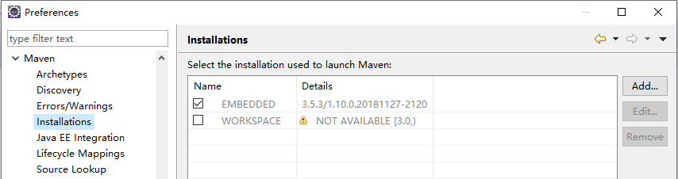
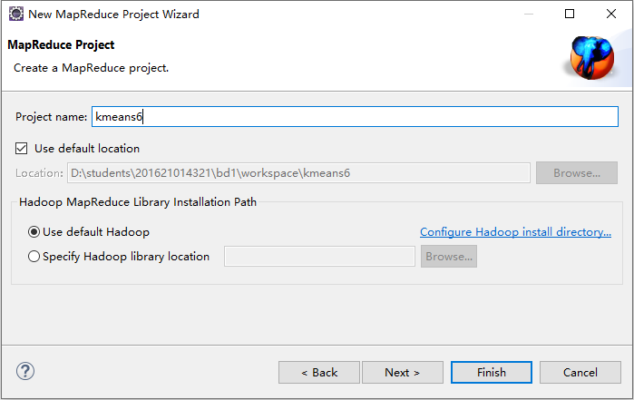

第10章 Mahout
辽宁师范大学 • 张大为@https://daweizh.github.io/bd1/
9.1 mahout install
- 进入bd
jack@node0:~$ cd /usr/bd - 下载mahout
jack@node0:/usr/bd$ sudo wget http://210.47.218.146:8080/repos/courses/100509/150000004/tool/2019/apache-mahout-distribution-0.13.0.tar.gz [sudo] password for jack: --2019-05-27 05:05:44-- http://210.47.218.146:8080/repos/courses/100509/150000004/tool/2019/apache-mahout-distribution-0.13.0.tar.gz Connecting to 210.47.218.146:8080... connected. HTTP request sent, awaiting response... 200 OK Length: 228079891 (218M) [application/x-gzip] Saving to: ‘apache-mahout-distribution-0.13.0.tar.gz’ apache-mahout-distribu 100%[===========================>] 217.51M 8.04MB/s in 27s 2019-05-27 05:06:12 (7.93 MB/s) - ‘apache-mahout-distribution-0.13.0.tar.gz’ saved [228079891/228079891]
- 解压
jack@node0:/usr/bd$ sudo tar -zxvf apache-mahout-distribution-0.13.0.tar.gz
- 改名
jack@node0:/usr/bd$ sudo mv apache-mahout-distribution-0.13.0 mahout-0.13.0
- 配置环境变量
jack@node0:/usr/bd$ sudo vim /etc/profile export JAVA_HOME=/usr/bd/jdk1.8.0_202 export PATH=$PATH:$JAVA_HOME/bin export JAVA_HOME=/usr/bd/jdk1.8.0_202 export PATH=$PATH:$JAVA_HOME/bin export HADOOP_HOME=/usr/bd/hadoop-3.1.2 export PATH=$PATH:$HADOOP_HOME/bin:$HADOOP_HOME/sbin export HADOOP_VERSION=3.1.2 export MAHOUT_HOME=/usr/bd/mahout-0.13.0 export MAHOUT_CONF_DIR=$MAHOUT_HOME/conf export PATH=$PATH:$MAHOUT_HOME/bin:$MAHOUT_HOME/conf
- 让环境变量生效
jack@node0:/usr/bd/mahout-0.13.0$ source /etc/profile - 设置本地执行
jack@node0:/usr/bd/mahout-0.13.0$ export MAHOUT_LOCAL=true
- 查看mahout配置情况
jack@node0:/usr/bd/mahout-0.13.0$ mahout MAHOUT_LOCAL is set, so we don't add HADOOP_CONF_DIR to classpath. MAHOUT_LOCAL is set, running locally SLF4J: Class path contains multiple SLF4J bindings. SLF4J: Found binding in [jar:file:/usr/bd/mahout-0.13.0/mahout-examples-0.13.0-job.jar!/org/slf4j/impl/StaticLoggerBinder.class] SLF4J: Found binding in [jar:file:/usr/bd/mahout-0.13.0/mahout-mr-0.13.0-job.jar!/org/slf4j/impl/StaticLoggerBinder.class] SLF4J: Found binding in [jar:file:/usr/bd/mahout-0.13.0/lib/slf4j-log4j12-1.7.22.jar!/org/slf4j/impl/StaticLoggerBinder.class] SLF4J: See http://www.slf4j.org/codes.html#multiple_bindings for an explanation. SLF4J: Actual binding is of type [org.slf4j.impl.Log4jLoggerFactory] An example program must be given as the first argument. Valid program names are: arff.vector: : Generate Vectors from an ARFF file or directory baumwelch: : Baum-Welch algorithm for unsupervised HMM training canopy: : Canopy clustering cat: : Print a file or resource as the logistic regression models would see it cleansvd: : Cleanup and verification of SVD output clusterdump: : Dump cluster output to text clusterpp: : Groups Clustering Output In Clusters cmdump: : Dump confusion matrix in HTML or text formats cvb: : LDA via Collapsed Variation Bayes (0th deriv. approx) cvb0_local: : LDA via Collapsed Variation Bayes, in memory locally. describe: : Describe the fields and target variable in a data set evaluateFactorization: : compute RMSE and MAE of a rating matrix factorization against probes fkmeans: : Fuzzy K-means clustering hmmpredict: : Generate random sequence of observations by given HMM itemsimilarity: : Compute the item-item-similarities for item-based collaborative filtering kmeans: : K-means clustering lucene.vector: : Generate Vectors from a Lucene index matrixdump: : Dump matrix in CSV format matrixmult: : Take the product of two matrices parallelALS: : ALS-WR factorization of a rating matrix qualcluster: : Runs clustering experiments and summarizes results in a CSV recommendfactorized: : Compute recommendations using the factorization of a rating matrix recommenditembased: : Compute recommendations using item-based collaborative filtering regexconverter: : Convert text files on a per line basis based on regular expressions resplit: : Splits a set of SequenceFiles into a number of equal splits rowid: : Map SequenceFile<Text,VectorWritable> to {SequenceFile<IntWritable,VectorWritable>, SequenceFile<IntWritable,Text>} rowsimilarity: : Compute the pairwise similarities of the rows of a matrix runAdaptiveLogistic: : Score new production data using a probably trained andvalidated AdaptivelogisticRegression model runlogistic: : Run a logistic regression model against CSV data seq2encoded: : Encoded Sparse Vector generation from Text sequence files seq2sparse: : Sparse Vector generation from Text sequence files seqdirectory: : Generate sequence files (of Text) from a directory seqdumper: : Generic Sequence File dumper seqmailarchives: : Creates SequenceFile from a directory containing gzipped mail archives seqwiki: : Wikipedia xml dump to sequence file spectralkmeans: : Spectral k-means clustering split: : Split Input data into test and train sets splitDataset: : split a rating dataset into training and probe parts ssvd: : Stochastic SVD streamingkmeans: : Streaming k-means clustering svd: : Lanczos Singular Value Decomposition testnb: : Test the Vector-based Bayes classifier trainAdaptiveLogistic: : Train an AdaptivelogisticRegression model trainlogistic: : Train a logistic regression using stochastic gradient descent trainnb: : Train the Vector-based Bayes classifier transpose: : Take the transpose of a matrix validateAdaptiveLogistic: : Validate an AdaptivelogisticRegression model against hold-out data set vecdist: : Compute the distances between a set of Vectors (or Cluster or Canopy, they must fit in memory) and a list of Vectors vectordump: : Dump vectors from a sequence file to text viterbi: : Viterbi decoding of hidden states from given output states sequence
9.2 mahout local
隐马尔可夫模型（Hidden Markov Model，HMM）是概率学上的一种统计模型，它用来描述一个含有隐含未知参数的马尔可夫过程。其难点是从可观察的参数中确定该过程的隐含参数。
HMM正常主要用来解决三类问题，这三类问题对应都有相关的算法。
- 评估问题： 前向算法
- 解码问题： Viterbi算法
- 学习问题： Baum-Welch算法(向前向后算法)
实验步骤
- 回到家目录
jack@node0:/usr/bd$ cd ~ - 建立mahout文件夹
jack@node0:~$ mkdir mahout - 进入mahout文件夹
jack@node0:~$ cd mahout/ - 例子数据
To build a Hidden Markov Model and use it to build some predictions, try a simple example like this:0 1 2 2 2 1 1 0 0 3 3 3 2 1 2 1 1 1 1 2 2 2 0 0 0 0 0 0 2 2 2 0 0 0 0 0 0 2 2 2 3 3 3 3 3 3 2 3 2 3 2 3 2 1 3 0 0 0 1 0 1 0 2 1 2 1 2 1 2 3 3 3 3 2 2 3 2 1 1 0 - 创建例子数据文件
Create an input file to train the model. Here we have a sequence drawn from the set of states 0, 1, 2, and 3, separated by space characters.$ echo "0 1 2 2 2 1 1 0 0 3 3 3 2 1 2 1 1 1 1 2 2 2 0 0 0 0 0 0 2 2 2 0 0 0 0 0 0 2 2 2 3 3 3 3 3 3 2 3 2 3 2 3 2 1 3 0 0 0 1 0 1 0 2 1 2 1 2 1 2 3 3 3 3 2 2 3 2 1 1 0" > hmm-input
- 查看hmm-input文件内容
jack@node0:~/mahout$ cat hmm-input 0 1 2 2 2 1 1 0 0 3 3 3 2 1 2 1 1 1 1 2 2 2 0 0 0 0 0 0 2 2 2 0 0 0 0 0 0 2 2 2 3 3 3 3 3 3 2 3 2 3 2 3 2 1 3 0 0 0 1 0 1 0 2 1 2 1 2 1 2 3 3 3 3 2 2 3 2 1 1 0 - 设置本地执行模式
$ export MAHOUT_LOCAL=true
- 运行baumwelch训练模型
Now run the baumwelch job to train your model, after first setting MAHOUT_LOCAL to true, to use your local file system.jack@node0:~/mahout$ mahout baumwelch -i hmm-input -o hmm-model -nh 3 -no 4 -e .0001 -m 1000 MAHOUT_LOCAL is set, so we don't add HADOOP_CONF_DIR to classpath. MAHOUT_LOCAL is set, running locally SLF4J: Class path contains multiple SLF4J bindings. SLF4J: Found binding in [jar:file:/usr/bd/mahout-0.13.0/mahout-examples-0.13.0-job.jar!/org/slf4j/impl/StaticLoggerBinder.class] SLF4J: Found binding in [jar:file:/usr/bd/mahout-0.13.0/mahout-mr-0.13.0-job.jar!/org/slf4j/impl/StaticLoggerBinder.class] SLF4J: Found binding in [jar:file:/usr/bd/mahout-0.13.0/lib/slf4j-log4j12-1.7.22.jar!/org/slf4j/impl/StaticLoggerBinder.class] SLF4J: See http://www.slf4j.org/codes.html#multiple_bindings for an explanation. SLF4J: Actual binding is of type [org.slf4j.impl.Log4jLoggerFactory] 19/05/28 02:22:19 WARN MahoutDriver: No baumwelch.props found on classpath, will use command-line arguments only Initial probabilities: 0 1 2 1.0 0.0 0.0 Transition matrix: 0 1 2 0 0.9210411398987962 0.03833700197760096 0.04062185812360283 1 5.364954758153449E-8 0.0012869012334013863 0.9987130451170511 2 0.18871395627386478 0.8112759389724316 1.0104753703628941E-5 Emission matrix: 0 1 2 3 0 0.46697567934271617 0.2708189098483067 0.2622054108089773 5.050259568920665E-35 1 5.10929488814386E-49 0.2297448537120435 0.1135781503989536 0.656676995889003 2 9.686253069060206E-41 1.6220671941635487E-23 0.6152778168393492 0.38472218316065077 19/05/28 02:22:19 INFO MahoutDriver: Program took 146 ms (Minutes: 0.0024333333333333334)
- 创建预测队列
The model trained with the input set now is in the file 'hmm-model', which we can use to build a predicted sequence.jack@node0:~/mahout$ mahout hmmpredict -m hmm-model -o hmm-predictions -l 10 MAHOUT_LOCAL is set, so we don't add HADOOP_CONF_DIR to classpath. MAHOUT_LOCAL is set, running locally SLF4J: Class path contains multiple SLF4J bindings. SLF4J: Found binding in [jar:file:/usr/bd/mahout-0.13.0/mahout-examples-0.13.0-job.jar!/org/slf4j/impl/StaticLoggerBinder.class] SLF4J: Found binding in [jar:file:/usr/bd/mahout-0.13.0/mahout-mr-0.13.0-job.jar!/org/slf4j/impl/StaticLoggerBinder.class] SLF4J: Found binding in [jar:file:/usr/bd/mahout-0.13.0/lib/slf4j-log4j12-1.7.22.jar!/org/slf4j/impl/StaticLoggerBinder.class] SLF4J: See http://www.slf4j.org/codes.html#multiple_bindings for an explanation. SLF4J: Actual binding is of type [org.slf4j.impl.Log4jLoggerFactory] 19/05/28 02:23:56 WARN MahoutDriver: No hmmpredict.props found on classpath, will use command-line arguments only 19/05/28 02:23:56 INFO MahoutDriver: Program took 29 ms (Minutes: 4.8333333333333334E-4)
- 查看预测结果
jack@node0:~/mahout$ cat hmm-predictions 2 0 1 3 2 1 3 1 3 3
9.3 mahout hadoop run
- 启动hadoop集群
$ startall.sh
- 设置mahout集群运行模式
$ unset MAHOUT_LOCAL
- 测试mahout
$ mahout Running on hadoop, using /usr/bd/hadoop-3.1.2/bin/hadoop and HADOOP_CONF_DIR= MAHOUT-JOB: /usr/bd/mahout-0.13.0/mahout-examples-0.13.0-job.jar An example program must be given as the first argument. Valid program names are: arff.vector: : Generate Vectors from an ARFF file or directory baumwelch: : Baum-Welch algorithm for unsupervised HMM training canopy: : Canopy clustering cat: : Print a file or resource as the logistic regression models would see it cleansvd: : Cleanup and verification of SVD output clusterdump: : Dump cluster output to text clusterpp: : Groups Clustering Output In Clusters cmdump: : Dump confusion matrix in HTML or text formats cvb: : LDA via Collapsed Variation Bayes (0th deriv. approx) cvb0_local: : LDA via Collapsed Variation Bayes, in memory locally. describe: : Describe the fields and target variable in a data set evaluateFactorization: : compute RMSE and MAE of a rating matrix factorization against probes fkmeans: : Fuzzy K-means clustering hmmpredict: : Generate random sequence of observations by given HMM itemsimilarity: : Compute the item-item-similarities for item-based collaborative filtering kmeans: : K-means clustering lucene.vector: : Generate Vectors from a Lucene index matrixdump: : Dump matrix in CSV format matrixmult: : Take the product of two matrices parallelALS: : ALS-WR factorization of a rating matrix qualcluster: : Runs clustering experiments and summarizes results in a CSV recommendfactorized: : Compute recommendations using the factorization of a rating matrix recommenditembased: : Compute recommendations using item-based collaborative filtering regexconverter: : Convert text files on a per line basis based on regular expressions resplit: : Splits a set of SequenceFiles into a number of equal splits rowid: : Map SequenceFile<Text,VectorWritable> to {SequenceFile<IntWritable,VectorWritable>, SequenceFile<IntWritable,Text>} rowsimilarity: : Compute the pairwise similarities of the rows of a matrix runAdaptiveLogistic: : Score new production data using a probably trained and validated AdaptivelogisticRegression model runlogistic: : Run a logistic regression model against CSV data seq2encoded: : Encoded Sparse Vector generation from Text sequence files seq2sparse: : Sparse Vector generation from Text sequence files seqdirectory: : Generate sequence files (of Text) from a directory seqdumper: : Generic Sequence File dumper seqmailarchives: : Creates SequenceFile from a directory containing gzipped mail archives seqwiki: : Wikipedia xml dump to sequence file spectralkmeans: : Spectral k-means clustering split: : Split Input data into test and train sets splitDataset: : split a rating dataset into training and probe parts ssvd: : Stochastic SVD streamingkmeans: : Streaming k-means clustering svd: : Lanczos Singular Value Decomposition testnb: : Test the Vector-based Bayes classifier trainAdaptiveLogistic: : Train an AdaptivelogisticRegression model trainlogistic: : Train a logistic regression using stochastic gradient descent trainnb: : Train the Vector-based Bayes classifier transpose: : Take the transpose of a matrix validateAdaptiveLogistic: : Validate an AdaptivelogisticRegression model against hold-out data set vecdist: : Compute the distances between a set of Vectors (or Cluster or Canopy, they must fit in memory) and a list of Vectors vectordump: : Dump vectors from a sequence file to text viterbi: : Viterbi decoding of hidden states from given output states sequence
- 回到测试目录
$ cd ~/mahout - 下载测试数据
$ sudo wget http://archive.ics.uci.edu/ml/databases/synthetic_control/synthetic_control.data [sudo] password for jack: --2019-05-27 06:30:06-- http://archive.ics.uci.edu/ml/databases/synthetic_control/synthetic_control.data Resolving archive.ics.uci.edu (archive.ics.uci.edu)... 128.195.10.252 Connecting to archive.ics.uci.edu (archive.ics.uci.edu)|128.195.10.252|:80... connected. HTTP request sent, awaiting response... 200 OK Length: 288374 (282K) [application/x-httpd-php] Saving to: ‘synthetic_control.data’ synthetic_control.data 100%[=====================================>] 281.62K 17.4KB/s in 13s 2019-05-27 06:30:20 (22.0 KB/s) - ‘synthetic_control.data’ saved [288374/288374]
- 在hdfs上创建测试数据目录
$ hdfs dfs -mkdir /user/jack/testdata
- 上传测试数据
$ hdfs dfs -put synthetic_control.data /user/jack/testdata/
- 查看测试数据
$ hdfs dfs -ls /user/jack/testdata/ Found 1 items -rw-r--r-- 2 jack supergroup 288374 2019-05-27 06:31 /user/jack/testdata/synthetic_control.data
- 在hadoop集群上运行聚类算法
$ mahout -core org.apache.mahout.clustering.syntheticcontrol.kmeans.Job ... ... 19/05/27 07:15:59 INFO ClusterDumper: Wrote 6 clusters 19/05/27 07:15:59 INFO MahoutDriver: Program took 2559514 ms (Minutes: 42.658566666666665)
- 等待执行大约12次
- 查看mahout的计算输出
$ hdfs dfs -ls /user/jack/output Found 15 items -rw-r--r-- 2 jack supergroup 194 2019-05-27 07:14 /user/jack/output/_policy drwxr-xr-x - jack supergroup 0 2019-05-27 07:15 /user/jack/output/clusteredPoints drwxr-xr-x - jack supergroup 0 2019-05-27 06:36 /user/jack/output/clusters-0 drwxr-xr-x - jack supergroup 0 2019-05-27 06:39 /user/jack/output/clusters-1 drwxr-xr-x - jack supergroup 0 2019-05-27 07:14 /user/jack/output/clusters-10-final drwxr-xr-x - jack supergroup 0 2019-05-27 06:41 /user/jack/output/clusters-2 drwxr-xr-x - jack supergroup 0 2019-05-27 06:45 /user/jack/output/clusters-3 drwxr-xr-x - jack supergroup 0 2019-05-27 06:49 /user/jack/output/clusters-4 drwxr-xr-x - jack supergroup 0 2019-05-27 06:50 /user/jack/output/clusters-5 drwxr-xr-x - jack supergroup 0 2019-05-27 06:51 /user/jack/output/clusters-6 drwxr-xr-x - jack supergroup 0 2019-05-27 06:53 /user/jack/output/clusters-7 drwxr-xr-x - jack supergroup 0 2019-05-27 06:56 /user/jack/output/clusters-8 drwxr-xr-x - jack supergroup 0 2019-05-27 06:59 /user/jack/output/clusters-9 drwxr-xr-x - jack supergroup 0 2019-05-27 06:35 /user/jack/output/data drwxr-xr-x - jack supergroup 0 2019-05-27 06:36 /user/jack/output/random-seeds
- 查看结果数据
$ mahout vectordump -i ./output/data/part-m-00000 ... ... {0:34.3354,33:7.97526,25:34.0258,58:11.6989,49:11.0276,50:10.6075,8:26.7666,9:33.0887,24:34.8249,57:11.7426,59:10.1521,26:8.8228,16:29.2769,17:31.7612,23:26.5812,18:34.6501,35:9.20801,39:17.8322,27:12.6338,56:13.9132,47:14.3998,48:15.6964,51:15.1897,55:15.013,31:16.6505,52:9.07618,32:18.0782,34:9.27375,36:12.8791,38:6.97605,46:9.44524,40:13.3297,41:6.32571,45:10.4253,44:16.7155,42:12.1314,43:11.8421,29:6.27907,4:24.5189,37:12.7293,12:26.3833,54:9.84551,13:35.6614,53:17.9085,30:13.6444,28:12.6937,19:24.9401,21:26.8485,22:28.7144,20:33.4339,2:31.9529,6:27.6961,15:27.685,14:32.6631,11:26.2327,10:31.3705,1:30.9375,3:31.1457,7:29.8744,5:24.3933} 19/05/27 08:23:46 INFO MahoutDriver: Program took 37433 ms (Minutes: 0.6238833333333333)
- 集群运行状态
9.4 Maven编译环境
9.4.1 环境配置
- 进入D:\students\201621014321\bd1\wedo
- 建立maven-jars文件夹
- 创建settings.xml文件
<?xml version="1.0" encoding="UTF-8"?> <settings xmlns="http://maven.apache.org/SETTINGS/1.0.0" xmlns:xsi="http://www.w3.org/2001/XMLSchema-instance" xsi:schemaLocation="http://maven.apache.org/SETTINGS/1.0.0 http://maven.apache.org/xsd/settings-1.0.0.xsd"> <localRepository>D:/students/201621014321/bd1/wedo/maven-jars</localRepository> </settings>
- 选择window->preferences菜单
- 查看maven安装情况
 - maven用户设置
- 查看java安装情况
- 增加JDK配置
- 选择JDK所在文件夹
- 选中JDK配置
- 配置执行环境
9.4.2 创建项目
- 新建项目
- 选择Maven项目
- 选择项目缺省位置
- 选择Maven项目架构类型
- 填写项目信息

- 选择项目属性
- 选择Java编译器版本
- 编译项目
- 编译成功信息
[INFO] --- maven-jar-plugin:2.4:jar (default-jar) @ user --- [INFO] Building jar: D:\students\201621014321\bd1\workspace\user\target\user-0.0.1-SNAPSHOT.jar [INFO] [INFO] --- maven-install-plugin:2.4:install (default-install) @ user --- [INFO] Installing D:\students\201621014321\bd1\workspace\user\target\user-0.0.1-SNAPSHOT.jar to D:\students\201621014321\bd1\wedo\maven-jars\my\user\cf\user\0.0.1-SNAPSHOT\user-0.0.1-SNAPSHOT.jar [INFO] Installing D:\students\201621014321\bd1\workspace\user\pom.xml to D:\students\201621014321\bd1\wedo\maven-jars\my\user\cf\user\0.0.1-SNAPSHOT\user-0.0.1-SNAPSHOT.pom [INFO] ------------------------------------------------------------------------ [INFO] BUILD SUCCESS [INFO] ------------------------------------------------------------------------ [INFO] Total time: 4.031 s [INFO] Finished at: 2019-05-30T14:42:11+08:00 [INFO] ------------------------------------------------------------------------
9.5 用户推荐协同过滤本地执行
- pom.xml
<project xmlns="http://maven.apache.org/POM/4.0.0" xmlns:xsi="http://www.w3.org/2001/XMLSchema-instance" xsi:schemaLocation="http://maven.apache.org/POM/4.0.0 http://maven.apache.org/xsd/maven-4.0.0.xsd"> <modelVersion>4.0.0</modelVersion> <groupId>my.user.cf</groupId> <artifactId>user</artifactId> <version>0.0.1-SNAPSHOT</version> <packaging>jar</packaging> <name>user</name> <url>http://maven.apache.org</url> <properties> <project.build.sourceEncoding>UTF-8</project.build.sourceEncoding> <mahout.version>0.9</mahout.version> </properties> <dependencies> <dependency> <groupId>junit</groupId> <artifactId>junit</artifactId> <version>3.8.1</version> <scope>test</scope> </dependency> <dependency> <groupId>org.apache.mahout</groupId> <artifactId>mahout-core</artifactId> <version>${mahout.version}</version> </dependency> <dependency> <groupId>org.apache.mahout</groupId> <artifactId>mahout-integration</artifactId> <version>${mahout.version}</version> <exclusions> <exclusion> <groupId>org.mortbay.jetty</groupId> <artifactId>jetty</artifactId> </exclusion> <exclusion> <groupId>org.apache.cassandra</groupId> <artifactId>cassandra-all</artifactId> </exclusion> <exclusion> <groupId>me.prettyprint</groupId> <artifactId>hector-core</artifactId> </exclusion> </exclusions> </dependency> </dependencies> </project>
- 建立与src平行的数据文件夹data
- 在data中建立文件item.csv
1,101,5.0 1,102,3.0 1,103,2.5 2,101,2.0 2,102,2.5 2,103,5.0 2,104,2.0 3,101,2.5 3,104,4.0 3,105,4.5 3,107,5.0 4,101,5.0 4,103,3.0 4,104,4.5 4,106,4.0 5,101,4.0 5,102,3.0 5,103,2.0 5,104,4.0 5,105,3.5 5,106,4.0
- UserCF.java
package my.user.cf.user; import java.io.File; import java.io.IOException; import java.util.List; import org.apache.mahout.cf.taste.common.TasteException; import org.apache.mahout.cf.taste.impl.common.LongPrimitiveIterator; import org.apache.mahout.cf.taste.impl.model.file.FileDataModel; import org.apache.mahout.cf.taste.impl.neighborhood.NearestNUserNeighborhood; import org.apache.mahout.cf.taste.impl.recommender.GenericUserBasedRecommender; import org.apache.mahout.cf.taste.impl.similarity.EuclideanDistanceSimilarity; import org.apache.mahout.cf.taste.model.DataModel; import org.apache.mahout.cf.taste.recommender.RecommendedItem; import org.apache.mahout.cf.taste.recommender.Recommender; import org.apache.mahout.cf.taste.similarity.UserSimilarity; public class UserCF { final static int NEIGHBORHOOD_NUM = 2; final static int RECOMMENDER_NUM = 3; public static void main(String[] args) throws IOException, TasteException { String file = "data/item.csv"; DataModel model = new FileDataModel(new File(file)); UserSimilarity user = new EuclideanDistanceSimilarity(model); NearestNUserNeighborhood neighbor = new NearestNUserNeighborhood(NEIGHBORHOOD_NUM, user, model); Recommender r = new GenericUserBasedRecommender(model, neighbor, user); LongPrimitiveIterator iter = model.getUserIDs(); while (iter.hasNext()) { long uid = iter.nextLong(); List<RecommendedItem> list = r.recommend(uid, RECOMMENDER_NUM); System.out.printf("uid:%s", uid); for (RecommendedItem ritem : list) { System.out.printf("(%s,%f)", ritem.getItemID(), ritem.getValue()); } System.out.println(); } } }
- 运行UserCF.java类
SLF4J: Failed to load class "org.slf4j.impl.StaticLoggerBinder". SLF4J: Defaulting to no-operation (NOP) logger implementation SLF4J: See http://www.slf4j.org/codes.html#StaticLoggerBinder for further details. uid:1(104,4.274336)(106,4.000000) uid:2(105,4.055916) uid:3(103,3.360987)(102,2.773169) uid:4(102,3.000000) uid:5
- 结果分析
- 向用户ID1，推荐前二个最相关的物品, 104和106
- 向用户ID2，推荐前二个最相关的物品, 但只有一个105
- 向用户ID3，推荐前二个最相关的物品, 103和102
- 向用户ID4，推荐前二个最相关的物品, 但只有一个102
- 向用户ID5，推荐前二个最相关的物品, 没有符合的
- 参考文献
- https://www.cnblogs.com/zlslch/p/6039652.html
- https://github.com/bsspirit/maven_mahout_template
9.6 kmeans算法本地执行
- 创建maven项目cmeans
- pom.xml
- 创建与src平行的数据文件夹data
- 创建数据文件random.csv
-0.883033363823402,-3.31967192630249 -2.39312626419456,3.34726861118871 2.66976353341256,1.85144276077058 -1.09922906899594,-6.06261735207489 -4.36361936997216,1.90509905380532 -0.00351835125495037,-0.610105996559153 -2.9962958796338,-3.60959839525735 -3.27529418132066,0.0230099799641799 2.17665594420569,6.77290756817957 -2.47862038335637,2.53431833167278 5.53654901906814,2.65089785582474 5.66257474538338,6.86783609641077 -0.558946883114376,1.22332819416237 5.11728525486132,3.74663871584768 1.91240516693351,2.95874731384062 -2.49747101306535,2.05006504756875 3.98781883213459,1.00780938946366 5.47470532716682,5.35084411045171 -0.79402300717749,7.17242105745187 7.51034597879028,-0.783877360670144 -1.08834195280434,7.55255231481522 -1.47362519479253,-0.983402065143222 5.16973011677342,6.43296933126781 4.37206931371724,-1.80265811927682 5.7957558410613,-6.9110236101639 -0.961335643154265,-6.1631112052877 3.07346912742024,3.0893648342903 3.10862701040948,-0.828662091196936 -2.36221204235195,2.03616291797137 -0.928078652504146,0.424620749820013 5.79686775634726,4.44547045961973 1.26010167168882,-3.98958833196377 -3.81074495393164,0.217057863172494 0.826342537860874,1.64176242571428 -0.209993386694132,-2.53293612992492 4.951267889036,2.96323341783283 -0.843589850537745,1.38823637051999 -3.14250045188607,2.80425523687701 -1.47148276148123,-2.44031526048316 3.84537094133681,3.94626482940036 -0.225997526813618,0.639214901117874 -2.93870633327501,0.32082056764111 5.83446330588468,4.49390238237244 0.793034853442584,1.09321320940756 1.10434131565024,2.25409176084864 -1.97980866695079,0.424552851469709 2.33395018409807,3.29069425175521 6.1208214554864,-1.83126122899343 -0.318620100911477,-0.414465135051068 -0.50547891453156,1.54307993945763 3.68148585938392,2.14043561045133 2.37563072888074,-1.92583076749884 -4.40453299201439,-0.189727417831046 3.7726476119364,-0.396743104871819 -3.15038116216198,-2.99891031955231 -0.712601336295705,10.4254341040971 -1.29912008372169,0.0505605479176814 -1.05022016673433,-2.29396900108983 -1.50028083681603,0.842779668904633 -1.9348973760979,3.51666445309004 5.81878902356282,-0.739809748289494 -0.287688964530079,1.2167225639027 2.59290326662403,0.88240189487665 0.796621692602321,3.73199413547551 7.36277838296813,0.100005022920076 1.19659787750907,2.72509567426979 3.89066968930777,2.65981895890374 2.90744939606751,2.7216220188901 4.18944773803192,-3.56975984939488 0.174640936066,-0.742313432053143 -1.75038314449992,5.07405511226419 1.86531484656164,1.77653072058414 0.0984031421558479,1.98925244282279 0.205438811384213,-1.773025341108 4.95180211952624,-0.959191093651717 0.386955408361344,0.901087190818593 -0.305531307207922,-1.01573616719706 2.69906146666496,3.24233593248642 2.45416309143461,3.40720285867439 -3.79664456652731,2.54763602044815 4.71625136836441,-2.52684604379 3.54816157191261,1.26887265177669 2.29555361022768,1.68280324165613 -0.0682616315143627,0.463287190343029 1.5202824193189,3.03156643191398 2.45577217247105,1.8844716206203 4.0847333586287,1.97616197205425 -1.91047699145605,5.64969171199483 3.82256486869727,-1.34091060816655 -0.110394862030652,3.16341883109534 2.8154366865375,2.4042460412579 -1.28073870781142,-2.20123380301553 0.752106323456165,-0.410769581109315 -7.43618626892577,-1.67723647952606 -0.528642825054631,3.70247213998926 2.25843979885002,6.53898782515247 -2.71917582791222,0.808265214901325 1.93021411601606,1.34166675634925 -0.26388282536007,-0.603260925282913 5.50832430038349,3.08367220044434 -1.36897587512365,-1.49573842374622 -0.577610014706967,-1.12812665352446 0.129997977923439,1.46828207976624 0.693073239253589,-2.12589619473584 4.0361840461976,2.51013749591606 2.61491630435751,6.42460505489141 4.32486001986451,3.69044173971876 -3.29193963216416,3.90582618471033 -1.43405611002315,1.7039761759395 1.0196634025833,4.69953547439544 -3.61235861870074,-0.801118115383484 -0.78212546361196,1.46835875387718 1.54695816846817,-0.23953998952094 6.88578834327012,-0.687026093876126 3.83954335291326,0.324118450559156 -4.00517953817477,2.57481318519553 -0.933604858284749,2.38550733656829 -0.393111617618002,2.25328695345167 6.59591943973522,4.33415131094507 3.35119215594894,1.86994585442946 2.63401825021803,3.54215485861462 -2.57157227737795,1.60532836465686 -0.45428078014163,-2.13738636495576 2.14310194472229,-0.550850564032171 0.352464384697005,4.37309093668509 2.30553559258535,4.21350614088666 1.70100822913604,3.11689735034045 0.71277528146907,2.93517517397671 1.51657547381342,6.52027970793193 -1.95034430925456,0.228054124895915 3.57157214857316,0.560978063958857 4.44863140945057,-0.474608549837454 6.64288609827488,-1.62413220300472 1.27894354923341,3.66694797547022 2.50421438585616,-1.30440183565369 -2.50764392997541,-2.06874766102369 1.56101171449622,-4.4194074806567 4.66525921532419,-2.15081512511732 -0.200716170832202,4.28164501837087 2.87507914670794,-1.49482115515722 3.92015025536832,4.85910190623327 0.992500211660956,1.74116863596454 4.66316317048869,1.92973069547825 -1.8990225172602,2.69715290427923 2.15381882924346,-1.53463788567 3.04251944029886,0.549060174743213 1.52359191716242,5.42118308191108 4.50111506747182,8.2451645490756 -0.235194834726609,1.12887035550533 0.220985460719366,2.28508166173846 1.22257780218867,-1.1977078825119 -0.631505213936839,-4.05444311161387 4.49755107696143,5.81038291410725 -1.07728977421076,7.66693963035787 1.87400420496674,-3.02480053315773 3.37197116847003,4.32785758498273 -1.30960222109432,-3.80214470504139 0.697805790200195,-1.03492350232363 1.45595987460079,4.82353191121558 2.28484982756909,0.00410389582893611 -0.0197797475097665,4.53107485182656 -0.782609876047617,1.58461272254707 4.43749021581377,-1.91509609612802 -0.226236224124069,-4.55154309788346 0.765324860293511,5.88935195826432 1.52189957517289,-2.9858196674476 3.31116957142826,-4.45141354473314 -2.2361611418791,-1.4041980546472 3.41574750329391,-4.78609988006444 -1.26260163349303,5.84671688206372 -1.13694671963913,-1.38626865412172 -0.0273225503087833,-3.41169091875892 -4.67872816888525,5.28314119932827 -3.12650141540947,-2.50746641772746 2.19519097879831,4.7315443264919 0.430223514216449,3.49548881933486 1.62345627139045,3.01878036786238 -2.96240667592577,-0.917187826897785 -0.545792350742291,-2.03646531914274 -0.965313451152929,0.894757669342735 -2.95329946518711,2.609963311093 -1.95692383753938,1.63988986832971 6.66217223723445,7.94824490403328 0.177031975592812,0.388344491441123 -2.55820905082141,1.73982050700031 -4.53604993456177,-1.17220689504176 4.15406638153507,-2.158145555743 0.655678011105645,-1.59362835540904 0.0212733296289027,5.31867377962844 5.01060521023514,-0.228672715195152 -0.925438865494699,-0.574928963773915 -1.78647183640233,1.7432949816469 -2.28308511209238,-4.83152457135564 1.08812460660974,0.800169098960289 -0.21122969098293,3.48460383403062 -3.66598724894093,1.52712512770191 1.06828082073891,-1.09510311087845 -1.45617826323326,-1.10602507404368 -0.405399804066447,1.86913977365578 1.02339452789162,-2.14208402544614 1.26648721695455,2.08911496772824 7.04258526322944,-2.5602306201969 5.15341574902411,3.16431231828559 2.89043117406526,0.360323853961057 0.433377787441544,-1.8934220088387 4.58707897753699,-1.77694516781355 2.58466580478548,2.01453480691412 3.33052127290671,-0.754007732601401 2.13853922033656,-1.50773705855713 -0.936999320607957,0.950985939696771 0.845774004324067,0.89590699474264 2.76464316791823,0.771798659656092 2.26834918879839,2.13542814959797 2.2804035897346,-2.12365069963154 -0.355671967145342,-0.724524002809902 -4.28456695031724,-2.26275227652987 -1.29806878458326,1.59613527829543 4.77558918224115,1.09923759093637 1.53797488380117,0.5509632168045 4.10310584372143,-0.445444887949754 -2.12355138977077,5.01005421600816 5.04780727187792,-1.17695589784088 -0.377279361497641,-2.2027750357397 -1.9975705498759,4.86032225340781 0.244572274129888,-1.96052613883138 4.91689599261588,3.76606653595104 0.791744374458142,5.46928869905983 0.581787115924167,0.247648874456471 1.81192441836727,-4.32441375986765 4.80016874995365,0.661874257991682 3.72952104864144,5.78068342917532 -1.20423644736753,2.82114015841511 -2.74552002548947,0.692503877825598 0.268493613957155,-3.64170475208694 -4.4155629645845,4.74942232797931 1.39008852671693,-4.0542948447645 1.19931021485969,7.28646834062398 -1.97196431600117,-0.48593395382277 1.33264575685811,-1.05362670536996 2.58237399722457,2.06796215205951 1.97386350631615,6.0061143849696 -0.167240913618086,4.61319053661388 -0.343852396247094,1.51956866290792 0.107738396401356,-1.54056712449174 -2.22117472515508,3.20832085034336 0.216661550041158,3.35806432620117 7.66952286802801,-1.07107061135821 5.71764960370557,3.58999642489441 -5.45714227884677,1.61691870211343 3.13618099415857,-5.42316526211331 -1.44718041893356,3.49963937613793 0.488397422166967,1.96544607481652 -2.74045556358037,2.47929895035705 -2.98102528727105,-0.808007112542793 0.653099821999417,-2.15457160136288 -6.01801047971208,-6.02623432550726 5.02294321060053,1.85917215588147 -1.74936297706465,2.86137083294877 5.11322641766545,8.12876967517682 -1.41992538793294,-4.80309452210249 -1.29040855913498,-4.9590561514628 1.10353078907011,-0.373805246457443 -2.9963886024293,3.01317880605356 4.64593836379087,0.879357200025818 3.88294582443746,2.16513817500559 2.51071663453203,-3.62763075685766 0.552498521997352,-3.33854027857263 -1.31379532949481,0.0853536265316557 -3.110883362635,0.590436772317638 2.03289426734501,1.39333866485433 1.51996533401137,2.78748191646878 1.28301350273973,4.41410212538107 6.16408788520503,1.20821880510185 1.78473548557538,1.95062321503872 -4.47332360972197,-0.118003720368934 3.2423488770004,0.238606823758947 1.17599690420473,3.45344428806034 -0.801963791067573,0.508685837685735 1.36013442615896,5.4429966379456 -0.786643169618928,3.21689341633229 -4.48944948783329,3.97674424889371 1.71618891935208,2.46651022440282 -3.56021166743222,-3.52694729663791 2.53235290175444,-4.25119261884171 0.918551879611806,3.3750787328016 3.50958959755199,-0.407536398273232 0.808358023669571,2.69250037928393 6.66364513760483,-0.503009325627848 5.97411894461451,0.261507954173993 -1.25341911852678,2.61067324339321 -1.39652455933999,2.05427155722238 -1.7137626314425,1.72807303978947 0.263676140470811,-4.99872565831726 -1.35638052055853,3.53901246312486 -2.90100218991096,4.36597216301154 -5.53092235760738,-1.14165787511203 -1.37942986707522,2.13286619426899 -6.53517233318327,0.618436487651406 -1.14724348621213,-1.03435692847415 1.12420672215451,3.68210443567477 -4.92117132248375,-4.17784176642088 0.745529688708478,-2.57470563210298 3.64505601342408,-4.24765804355797 -1.69073810447897,5.96081578352874 1.92503544747652,-5.69743992891911 1.26544292821202,-6.21174239584879 -2.42504308158058,0.0822084004392101 3.46465506591986,-6.73220230098576 -1.54471908455003,4.24323087397801 -0.490530253910441,0.984151234349023 -1.40626883842895,-2.15780245604133 -0.135429493800755,5.71156369985697 -0.24819326876848,4.91623207620463 2.48605026586406,3.43657248517131 2.32408490535349,0.10322614817576 -4.00667382504892,1.04075147668789 2.19372419290328,-1.19738711575619 6.85418264028353,0.291830918324201 -0.230504701489393,2.49666007172993 -3.43386004144592,-1.97187516113981 4.13041013151754,4.23476137692779 -2.37915843635059,3.10433114111203 -0.102077928147058,5.73103856969783 2.45314150876672,8.98748623264718 -8.22507828860673,2.15172843277822 -1.71981370538338,0.651917766018173 -1.09745167175489,4.27717710331101 5.53747329946211,-3.22032477860825 -4.35495041914497,5.25340038700864 5.15779217633442,1.18346596215991 2.01026220226674,-0.279107721250698 -2.40362874487957,4.44837844550481 -4.17355198474208,-1.00652395239656 0.344129951183881,1.59653419534725 5.46579353166429,-0.346408167498642 0.505227052442854,3.89755712457954 0.038305004340026,-2.56601128349936 1.71648258165724,-1.02120120410223 2.34228475237023,1.65385264918031 -1.5470749371579,1.35053672279915 -1.83665252817163,-1.53808141437507 5.18393477865974,2.47480129519112 2.07141942351455,1.23688338439706 -4.25539863510939,6.15436599132825 -0.751874546796278,0.885741166523573 2.36246575334831,1.54916132600913 1.42711958598902,5.1873975869627 2.20342886315435,-0.270928154904433 -0.914345261632097,1.8509443229476 -6.89744281925789,-1.15738100159719 -0.41200595971729,6.77254837422664 7.84533790767711,1.89743269948346 0.280345160237394,-0.801066238333618 -2.24265641080687,3.78052455841181 1.76750020318994,0.012627009589498 2.97878355623337,3.85874357020797 -0.446526146612889,2.20947813535702 1.2796680577555,4.78842040576813 -1.27010625299964,0.327372327902301 3.27238855302241,-3.06504797034653 -1.75085680159379,-1.5391224145155 0.313265137739817,5.18713955338193 -6.09193728436426,-2.18037789933441 -3.41163366494459,3.72386737292224 0.935809468131632,4.92074720189217 -4.89288282938566,3.02860284894418 3.26597934711478,-1.81036499673494 0.12342568763781,-2.40623885223241 -2.61251586401991,-0.699279622957984 6.26427455429702,-9.44090951193729 -0.440469253608496,2.66024047977708 2.18430913981149,0.123335929162538 -1.41052034349984,-0.980018536483755 0.708770245501719,2.60247036772697 -5.11453392720237,1.06637987236074 -6.40483553133531,-5.02002242863746 -0.631357591869621,-0.359989908427225 -0.656019498077692,-1.35825713585337 4.16868015470186,0.690445669064917 -1.46333747679134,-0.319063721088611 3.37328797360897,0.172317649949051 4.20689066420711,-3.44905650516199 2.95024962707868,-1.94020858486412 2.86988483714183,-3.15585307565197 2.82968700228062,-1.87033855725486 4.7589373980596,1.35015790004544 2.630752406579,-2.76955528754661 -2.20586172400091,-0.659268593813778 0.47646772530115,6.04766795429847 5.93128619175576,5.17790298815507 2.23266595892272,-3.49969982667653 -1.82342350400294,4.54889725105995 -3.0134698492765,3.07784532626314 4.87411071186266,0.282952117877584 1.21447392219738,-3.48655592727091 2.25001074852772,0.0729157280637326 7.33914197228895,-0.703940935800584 1.99202606828643,4.19320508250966 2.92743067117908,-0.820098831746323 2.73495503794852,-4.27625602534713 -0.0143097920871476,0.761276511278513 0.863832869009768,0.225557161073829 1.3835006153819,0.95895105769115 0.791646938118933,0.635475014903159 0.845650371810298,0.146067928143032 1.41870555448784,0.41002956743546 1.48812227992151,-0.506611055507384 -0.43353312726903,-0.0387107187772075 1.09638873110527,0.546588661887577 0.650996299580714,-0.0292621179770557 1.71478713849865,-0.221810611441427 1.67289109305143,-0.223055349105052 0.854952572808488,-0.11027885770399 0.971141128161505,0.0593180007672725 1.71836859768126,-0.0651597156964583 0.394011032507771,0.0482196355082445 1.28791817110011,0.00796374043265641 1.97538240647857,0.167713659929733 1.41790832501726,-0.848881903355584 0.901941651875604,-0.111278215691778 0.777282948081273,-0.0328040882386233 0.850628757101061,0.733189247541306 -0.066715989546519,0.127825422631606 0.745121659164392,-0.483566890777811 2.4652159176117,0.794179818242398 1.57034217778956,-0.512741949249994 1.47488333654272,0.0128646989731912 0.381443158385972,-0.480876748273851 2.0655650050717,-0.055695559845088 1.11529464813207,0.313895643479204 0.948280598620457,-0.505991028444868 0.150018906638334,0.184134260031683 1.82780652430327,0.53498007970698 0.690572754107254,-0.0657549424715979 1.49877449978275,-0.480721670838379 0.932570109965729,0.633689840210739 0.587132535289619,-0.00174949255968607 0.433379263318715,-0.480250842325101 0.851234368145952,-0.900705254693192 1.19498588142185,0.205688003844881 1.06376404462927,0.601685199038948 0.885008553762907,-0.70660877202353 2.06794516112,-0.579181265906311 0.766338951670794,0.193013998796244 0.934759608462685,-0.0874570409332672 0.764796500319393,0.520245290677149 0.518904552704764,-0.581225383194715 -0.10318800503893,0.0120017358414802 -0.148298646101872,-0.133966527818649 1.00313904266189,0.695341327639804 0.231788442806447,-0.744491847068096 1.42604997297482,-0.55770440435071 0.482696449182621,0.822709950901304 0.907775296080371,-0.181142176228605 1.49749270857095,-0.109776716314625 1.15140877305783,-0.00804432815919097 0.317946337763999,0.208256799881648 0.46565723901884,0.115937852993637 0.934685865445529,0.397170784724734 1.03381414942265,0.404435827904175 1.34637130380968,-0.467611417984145 0.386460153127429,0.25981769112673 1.45295012226745,0.163108085227566 1.01661870671665,-0.526804222297997 0.806272218114767,0.285493630315659 0.705923587882882,-0.0622245603814527 1.08627855371357,0.63715560246254 0.885709555803619,0.386431201901157 1.1402709019441,1.05401627558268 0.307537076517406,-0.396085674150175 0.641411659750256,-0.140066722023143 1.88709241937258,0.0384313682689942 1.16794360811573,0.0435984792833414 0.478026926735478,-0.278346499176476 1.12947493853774,0.0613825009591105 1.61601205040382,1.08319170606439 1.32128027912538,-0.0265480670160305 0.511198699870635,0.643820280715101 0.957983834596766,-0.46581408518629 0.784609491305408,0.269439133097677 1.31427021292685,0.303254245803291 0.165409178642752,-0.388868242406844 1.386030747352,-1.15987020130817 0.0795545297418306,-0.629330374276893 0.359674123533047,0.143832231911937 1.46635191683004,-0.195992353185387 2.69082394986281,0.70957078966578 0.767328919510874,0.606965098530996 1.053956619278,0.130199990582769 0.289018720109983,0.288410685702314 0.512648468188272,0.0840409759091717 1.1616071996871,-0.0789958397326136 0.870416201782181,-1.08363945087158 0.452048576508725,0.165189628497489 1.22065180805674,-0.0705106690640031 0.738106100233642,0.132281962316464 1.10756489517181,-0.693347158582112 1.21614441904906,-0.0483787588338399 1.47950285951656,0.635028248568434 0.822746770338309,-0.276905902515587 -0.045786990462483,0.809177848322784 0.366870673413697,0.100303393855095 0.553835603267938,0.582789825177116 0.711054370786611,-0.664049794065785 1.44249002694059,0.238488565098517 0.588930543066813,-0.251623244876591 1.16896702979722,0.161666417524137 0.681648459430527,0.0368730023585963 1.51710003400071,0.259876929924121 0.758135061055342,-0.391753923195779 0.244630234260537,-0.739636308269695 1.12713680459418,0.0935872578079612 0.532648734810283,-0.317871772866963 0.657285774747408,-1.15997307677467 1.02416616008799,0.377894064898328 1.31005792674478,-0.0895849700084032 0.776657737942907,0.169445855682827 0.87724207955027,-0.056109173377876 1.38075470757459,-0.563065782127891 0.570891469090441,0.290198520612153 1.01827442974853,0.101198309385673 0.850848785394811,-0.686913153049226 0.902538913431258,0.269624762937603 0.917568482264381,0.494786262198502 2.04312868275918,-0.181530029554185 1.43782569140496,-0.297163151875296 1.27405364035751,-0.800053405826333 0.950668353290241,0.385760919705825 1.29568674630784,-0.228800857374146 0.72520748089358,0.334420234994118 1.01682247723725,-0.307254097829249 1.16300544552182,-1.12567601344685 1.90787833026879,0.696421389603591 -0.166360156614808,-0.670268700956851 1.10356439586336,-0.149406665624045 1.07653083125949,-0.351550009337962 0.984736128822968,-0.035157496434904 2.6191327347762,-0.0691656810930757 1.29197077254778,0.262053154245621 1.19998465354205,-0.591174290569543 -0.183683071366737,0.452274897615964 1.19727978779925,0.0231699619432398 1.04381356216462,0.651988521650089 1.97003679608856,0.357391225873361 2.01341794057349,0.406581590363927 1.51419533950921,0.259776652404471 0.961446105057106,-0.46255698345131 1.47014147622138,0.931293835481541 1.25046770186935,-0.251783119474578 0.557966862485925,0.387662972486506 1.34499212026091,-0.479991426992535 0.0875083204204795,-0.0550669969497686 1.22554181745069,0.424366327129393 1.74787813748624,0.372462576532743 0.932430745531006,0.458686088830381 0.305454241697962,-1.29803954515757 0.59436121567074,-0.126505125570749 0.62386165354958,0.579769623215977 1.86032074252782,0.128561042866315 1.56935774996716,0.421828512350468 0.827743840151315,-0.30812851667877 1.152476361535,0.339153175469831 1.86471355151531,0.421252377462958 0.159054283749277,-0.503877945501398 1.01948081925315,-0.570572509867958 0.463790721439078,-0.0667496250494691 1.17069221595428,0.107718932772333 0.75271051745467,-0.532296902303213 1.25056974750107,0.245470253894773 1.23152436411686,-0.314829927364344 0.4866824683541,0.0575862173609475 1.3349047997938,0.362318834735145 0.137082521944621,0.0930852220146507 0.941485277339131,-0.757582207220968 0.319022982020461,0.0110752824788409 0.252135040976907,-0.477900218340933 0.701126383111754,0.591889983629656 0.930620155794285,-0.253189197579004 1.21719371311447,0.241282074240677 -0.0352480133460662,-0.521912155459712 0.921041322074971,-0.631533017470359 0.773161913690984,1.77019394295936 1.51585713992177,-0.584900072394856 0.816304729408146,-0.0583170163771952 0.617089824553223,-0.0651347273318635 1.19115262668213,-0.0267725924094409 1.03475656900759,0.749206370078526 -0.366168607171752,1.10430523284807 0.794670772075921,-0.945485755440743 0.350554423678718,0.196506149646981 1.05282028685924,0.154288874517836 0.158651236542229,0.345024089262675 1.77016681441469,0.553573837067382 1.33800960763483,-0.574708958722312 1.07443279592311,0.622476525470204 0.69948614262308,0.0731895624246045 1.0869468665952,0.333314844029359 1.11501663123344,-0.0783615396698993 1.01758678786995,-0.488335587315595 1.36557072338822,-0.0818184271852859 1.0958530909737,-0.614679661672811 1.07054851851395,0.397046304243459 0.372491605333585,0.130480254153397 0.131586528393479,0.147483611907814 1.4521978543425,-0.302495893735383 1.08863869326878,0.5997215226545 0.333539138375367,-0.424075892252052 1.21806026145923,0.69415830541804 1.18059770627109,-0.667199665371558 2.20108308762442,0.00831979905862713 1.67336457967844,0.0286051939217411 1.13213350413068,0.357239304284754 0.393804733019176,0.822704193706374 0.590461968369401,0.378190728017782 1.52673716055599,0.000132019090700936 1.74710154704381,-0.315933848495988 1.66874961846116,0.170056334246199 0.515422815701653,0.357127671849545 0.809046447350157,-0.127823369240871 0.987138042968783,0.238077861967229 0.498671831336296,-0.89013344602908 0.443287151378733,1.68703311726022 1.34461225522639,0.052483984968791 0.593747961656319,0.541223345618382 1.15334364469611,-0.779277076833809 1.04332540797212,0.0871796885256641 0.591147368297264,-0.588210824515261 1.14906260894516,-0.67616510664133 1.32473900152826,0.822521437751977 0.529048135427689,0.815712868993213 1.44369242995276,0.405405347369854 0.797036036344507,0.369088846146223 0.695660892817636,0.589588372827735 0.912295916373067,-0.163736648000526 0.60732168999801,0.359048426951549 0.511148623960413,0.40459856761408 1.70489523463727,-0.0384239722482165 1.35533699840812,0.516850412844864 1.30416297370327,-0.293090623373656 1.37360354541456,0.637823283218538 0.480383968586483,0.515390858884781 1.36989175032825,-0.194073881483487 1.76072851232207,0.0737830324137187 0.970411345601128,-0.275501767760867 0.560182761754411,-0.053315523759371 1.40727416961991,-1.35979529134083 0.696482218968185,0.388422785677662 1.36757081727074,-0.314411987649995 1.98825794256529,0.088079993724753 0.866170975847088,0.337229175226899 0.153200240349542,0.770165862205613 1.24693192089991,-0.778686186889582 0.600919835822739,0.714969483119234 0.280547561869433,-0.157254941468371 1.04351142213454,-0.364589936420863 -0.291922205851397,0.485175492248791 1.5543526340699,0.417416699918841 1.32385251577935,0.110541266333761 0.306472049758579,-0.0241536999874003 1.19514906107284,0.204993931799858 1.10378601335593,-0.412111992797925 1.81634449880281,-0.223462810096806 1.88450310057798,-0.998030843683462 0.78093094105528,0.193245241003464 0.652122925323515,0.499891920893482 0.899804352698326,-1.02293912144136 0.740396031885391,1.00297655139909 0.711984441188527,0.0165884545563329 1.18366958491934,0.451116550614935 1.00306199092747,0.557846183865855 1.4065461547113,1.12010254446434 1.67748794905157,-0.430926202880058 0.796485173089902,-0.473229056301969 2.03681924243249,0.0174864285918221 0.503507692458816,-0.906708325524638 1.65187020086852,-0.822950894913524 1.48216641368105,1.22667894760939 1.80607702313115,-0.17077260775981 0.713029575735174,0.0913373151687049 0.352862548389721,0.0742468033242634 1.45674735544721,-0.615014109982973 0.6767787388273,-0.376046127970185 0.572704786226526,-0.146493139172667 1.32311098248775,-0.217344048494633 1.47553433756955,-0.413141616958523 1.62081068105037,-0.3629987135886 0.103706721425633,-1.14971292935187 -0.182974558817846,0.661676595798353 2.43385003909557,-0.69222783929426 1.06206504038085,0.574763599715574 2.0027490359675,0.194248168070245 1.49966982716171,0.393758868778493 1.33771922662791,-0.129549257933402 1.84033206611535,0.086967192057508 0.35766095152618,0.116944958542987 1.24647657595908,-0.0255211984501469 1.19777015208723,0.360125493583736 0.323102173103922,-0.451916703501583 1.00896035215752,-0.0670638397128294 0.761171483539351,-0.611851424338412 0.122620226628217,1.95871457230919 -0.0269744667763177,2.0844891273588 -0.15296021766328,2.4495577897846 -0.00594562660402957,2.09343256280017 0.040994054059717,2.12614974774042 0.101037007595148,1.88487201659638 0.245149113562068,2.18749526923825 0.114144752823002,1.98212502894185 0.00335336877517714,2.34902682534864 -0.0294848098472835,2.10043749889082 0.0189517923992045,1.99286343753193 0.0105766006818795,2.10397435156456 0.0582259352332931,2.0794509609845 -0.0205678646538591,2.08822971415615 0.157188168158262,2.13882825192813 -0.283220465756654,1.92581027125071 0.0500946609939543,2.36449763339494 0.0575558494046134,2.23212474091766 0.0537901891015688,1.93031585112467 -0.020065517638286,2.31901701507888 -0.0559221952573374,1.73370565928107 -0.0122117407043339,1.94275588010905 0.00651496595349138,1.89205812187946 -0.148164780364417,2.36194226914406 -0.0540010829450429,1.45435089926964 0.145090467870078,2.1368455527073 -0.18896678410917,2.21356369521897 -0.1911483427547,1.73744816563285 -0.086918755442657,2.15971856860926 -0.00408747108222011,2.2847747687667 0.0433378292617548,2.12680960356004 -0.000333479800167115,1.8740422297331 -0.00144109356429703,1.84386976642592 -0.0863146306493393,1.73624516631759 0.0106830212157208,2.20224081703719 -0.0959926930302765,1.77446607859554 -0.22188883887593,1.86988770846345 0.0413398694393549,1.86030078065409 0.00864097512074965,2.30528955083698 0.0937302920783163,1.93728122499275 -0.0155572478313175,2.00051492448932 0.01374263940542,1.84209022671602 -0.0106596999353502,2.10625146212401 0.118362762355515,1.86311125386805 0.123040280573127,1.87558568472409 0.0224754488001857,2.13210927835745 0.0449836552375961,2.07925337845148 0.0908698444491341,2.03375535505454 -0.0130473770800945,2.05567388506099 0.0736001984900201,1.74057183834768 -0.0115439995623921,2.26161832326852 -0.0848712570841573,2.07533084902231 0.00388347416419641,1.93944955099732 -0.0451352614056629,1.91605666842615 -0.0825053684912219,2.45554252311338 -0.0559625558143481,2.01169535179457 -0.0577538083511631,2.04353225081874 0.138265169703653,2.09121114136236 -0.107218398276236,1.9924953624462 -0.118000340511428,1.76466402374957 -0.0231929940764478,2.07258700708271 0.222371362001198,1.82171600812604 0.0611650065938226,1.90083651194677 -0.0372297221091988,2.3022445283013 0.126082590960508,2.1382567816192 -0.0174394546963019,1.64843412403648 -0.0309410584724613,1.9523777691865 -0.0441942904026175,2.12805032728722 -0.136087108253766,2.08845626195016 0.174191159333777,1.77301210480267 0.182840748948152,2.00365231776053 0.0696619476704623,1.76811280113259 -0.00576263711449489,1.91481953476937 0.0257432914449995,1.91925838405721 -0.00375137464379868,1.87011941106348 -0.00543445921977678,1.82944008703228 -0.110231050837684,2.16478717080131 0.0894179266504389,2.03858531760106 0.0143154780097584,2.25411026094988 -0.0289239987690553,2.21283789110917 -0.08964748694629,1.97386679928264 0.00292685010723512,1.94123976194328 -0.216937731433354,1.83564134624296 0.233186005813743,2.16637967173515 0.0787209241045752,1.86243175010166 0.13747297559988,2.13477509255624 -0.0745912608482408,1.96439039555735 -0.0042390398252872,2.15630966836929 -0.198349524372216,1.97541544535454 0.170675976463927,2.04154035818888 -0.0293733714438948,2.24485403180043 -0.124786920830847,2.14905670446605 0.0540677409206884,2.13228568852218 -0.0768558919514813,1.98643495784721 -0.0384189884313238,2.27692451312738 0.0960371081122596,1.94652542789485 0.00806948201673843,2.35978357632153 0.0506856503758603,2.04885100381315 0.037673953140422,2.12067071374069 0.136759805623919,1.97591378782393 -0.0669541783834132,2.22850992247105 0.159126337647477,1.86924233818003 0.0599779890675151,1.95156272370742 0.0770622121790632,1.97604245263966 -0.052571811874882,1.90841095733799 -0.129394454193801,2.39980824144392 0.0635123559687552,2.39434021439466 0.0956523666462498,1.90296822404771 0.102638347041764,2.14755830120043 -0.0398226179722529,1.76614334825969 0.120111475474585,1.92451666154281 -0.108078065712761,1.89244933532708 0.0545813057203665,1.41247196134756 -0.00265098028187359,1.89216969209637 -0.0483076712397195,2.05223087068244 -0.0739881063973049,2.11155960383083 0.0396769013475862,2.01304105528413 -0.132875964578315,1.78041073939846 0.137825541850164,2.11068318803186 -0.0263847254208804,2.21367845119166 -0.0380913780302466,1.98330810121321 0.0927328619471665,1.73068357390536 -0.282505137532017,2.23405580954854 -0.113131169467986,2.23475206148139 0.041652054879727,2.27347155198347 -0.0579493241010424,1.74999249341507 -0.0638911674159352,2.26006336963149 0.0560271059463178,2.17421357603167 0.019827062908541,2.21802020925966 -0.0668371478025274,2.21549813972066 -0.0134584744680927,1.74501472144713 0.00827541088653359,1.92527122064346 0.0444662996094365,2.01318221505831 0.09835077654462,1.84765058162931 -0.113545811140038,2.32258715118772 0.0953713269737398,2.02537367901307 -0.322873803668086,2.18188930976094 -0.0720549459951926,2.2053197035756 0.0976216527281037,1.89542152686352 -0.0323480183091423,2.23699316946773 0.113126853825875,2.05543803696711 -0.0804511538537728,2.14731573862355 -0.00962228874245538,1.98001011766319 0.122710261382276,1.78118398102061 -0.0732673678353651,1.81859454428058 -0.0110540536869409,1.95017037102093 -0.0345213167595701,2.17601325177081 -0.0577430639817569,1.68213651951004 0.0449192024182686,2.2373911632507 -0.104358270268274,2.0940477840309 0.164405153866449,2.0926839117695 -0.102465200797012,1.8912534952926 -0.0677340712390868,2.42584998795096 -0.0255059331562325,2.05335548522974 -0.0192228540424905,2.10636449014672 0.186968685573894,2.07374643094453 0.181542767145034,1.77008120717876 -0.0394912306367813,1.82317293639189 0.119316789575905,1.99819382209215 0.132670387675846,1.84290878974995 -0.0436446026065501,1.99718349293677 -0.000633850604168516,1.92998644961079 -0.012186106214392,2.07838465541588 -0.0274269269274925,2.28063955339065 -0.0247198437197879,1.90387195812967 0.0187534086544611,2.20908581533484 0.0329800361701757,2.16574518305413 -0.00808381208016606,1.79915647114724 -0.131543566145706,2.36552417544771 0.0188682204200062,1.82648772867583 0.0489288022323916,2.07066990329363 0.0927544746933073,2.35633350622201 0.190349682283663,1.91240426728697 -0.0246205035887878,2.22446982732235 0.0399610295229908,1.90495708726553 0.128821089215694,1.95161667929845 0.020410932082598,1.92809322580697 -0.045303429226332,2.17205360284233 -0.0623404159377982,2.01155527046171 -0.0629601834723773,2.08815550101809 0.0324785168305324,1.96970544104828 0.137171592132614,2.35713341535459 0.0275131396440992,1.72539357447193 0.00571079362447005,2.39117908221118 0.0594954101834288,1.99411871186646 -0.0815313029158982,1.9649934005882 0.0224905120135272,2.12139883358942 -0.0329757713619073,2.12228594605546 -0.0285230068704353,1.98776170145905 -0.0209402009590598,1.84237260962458 0.246131824393145,2.06948049430629 0.0508836688154927,2.08949023679855 0.0130917794161198,1.75112308322323 0.231392397325225,2.24228886891068 0.0148732141949394,2.01652032792576 0.0190002824704484,1.92535478335752 -0.0990096546590071,1.84565808366102 -0.0708003059764763,2.03192335826787 -0.0784316520776401,2.00544810529844 0.17430514106755,2.34612936503242 -0.100449767496498,1.18996668822278 0.0777869891061867,2.25995042350327 0.0682100362049806,2.2282521580911 0.0339228926240661,1.69888751150861 0.016932914915298,1.76507706848898 0.0112552769637491,2.11282624443104 0.0112339366685372,1.7549521648548 -0.0786656133553588,1.95623571484199 0.0444273694737833,2.18108319498282 0.00520133121479109,2.29518298594033 -0.0347056863969676,2.25856873939433 -0.0932072693264669,1.96772099911341 0.0443875666260811,2.00917614929129 0.0012899117056205,2.12866519391854 -0.0498564266873983,1.86473956488723 -0.131832331903979,2.11657013982051 0.26910542803188,1.84797561877401 -0.0852254265494733,1.93957758599871 -0.0241876118033136,1.87149334403887 -0.0389693006741424,1.6595760649119 -0.0978350436200694,1.85365294909117 0.12282534711954,1.60277281655104 0.0565585138438931,2.14694340395842 -0.147978777313761,1.96128327036145 -0.155953147747417,2.07941091065622 -0.070962951788747,1.89929198142812 -0.02016488330229,2.01884234510883 0.0379428245380837,1.82070894522759 0.0504007127620835,1.60937375527574 -0.0791268044146582,1.79663079518653 0.0269759467973552,1.86516170556032 -0.0690939233172131,1.87019122419425 0.0256060564776407,1.60062357960219 -0.0332900480933804,1.83195592262982 0.0961355637482958,2.02940651914464 0.0117756472873996,2.05383788723112 0.065751169367804,1.84508355192235 -0.0654933054958067,1.60439839442832 0.198318353784874,2.16356364068865 0.0488726058363764,2.05947333607497 -0.0466242990431345,2.37891380287044 -0.274018767334097,1.91349899036199 0.0335827794368038,1.74225878518682 -0.251904616786458,2.01890122610287 -0.03890905844111,1.95144783732475 -0.145813590261795,2.29669572054733 -0.143061168981574,2.38008890847925 0.0216374429185926,2.04118402582236 -0.054196975524392,2.38702942569308 0.100965295785733,2.10086522077082 0.0305948159413175,2.11575892058019 -0.0165112642005241,2.13271488510337 0.140596406724013,2.12033308093583 0.042436692496284,2.07390599456695 0.0172447592361789,2.04673436687176 -0.0670516958984752,1.9677371269543 0.0518898912694086,1.72375688192301 -0.0591910834905225,2.10752822324155 0.103670089439194,2.23337496821961 0.185872804654056,2.06145459588024 0.00689869967403174,1.84222552682815 -0.0521330179541732,1.73226545439034 0.0486182496442781,1.78586470784933 0.0577228924876362,2.22149931362589 -0.0442593001232858,2.1362473199094 0.0235393170061831,2.32253418209738 -0.0555470861244571,1.95289398857535 -0.0267949528995186,2.18995716285231 0.0151784672370229,2.04521137186416 0.0296291082045666,2.059846089533 -0.0296965752418336,2.21064049260051 0.0141493076473875,2.24694546745918 0.0855308112065444,1.99859025416051 -0.0709358415437802,2.07268509973351 -0.0466396314678286,1.97004930762953 -0.0164841145675599,1.39892320039728 -0.0782775164090189,1.99430791079694 0.0925246846743095,2.02845963625271 -0.0755077165180935,2.0627605198353 0.160399746425937,2.0349410603244 0.0317370389003557,2.05734486314951 -0.0319236088258769,1.54186266141958 -0.0834310599196981,1.56741492913368 -0.0279140790032915,1.54539497694574 -0.175802165610966,1.91676388125438 -0.0336446988523848,1.80963886496386 0.0533829908470105,2.32675793952058 0.083906890826093,2.22538717485879 -0.00852227339660123,1.95897721936305 -0.162693685149196,2.19951550286862 0.038403978226574,2.21659244973575 -0.0409782183083317,2.09376666042057 0.111324993160915,2.01551478850274 0.158401778474687,2.37208412905273 -0.0960228731955729,1.34425579757982 0.0376805048887084,2.04582562863824 0.0343499838057584,2.08081746097301 -0.0106195362659265,2.33401370807511 -0.079555689998197,1.66708798143465 0.0387817669148008,2.29765472692439
- 生成数据的R语句
x1<-cbind(x=rnorm(400,1,3),y=rnorm(400,1,3)) x2<-cbind(x=rnorm(300,1,0.5),y=rnorm(300,0,0.5)) x3<-cbind(x=rnorm(300,0,0.1),y=rnorm(300,2,0.2)) x<-rbind(x1,x2,x3) write.table(x,file="randomData.csv",sep=",",row.names=FALSE,col.names=FALSE)
- kmeans原理图
- 运行结果
Init Point center: {0:-0.0834310599196981,1:1.56741492913368} Init Point center: {0:-0.0106195362659265,1:2.33401370807511} Init Point center: {0:0.0387817669148008,1:2.29765472692439} SLF4J: Failed to load class "org.slf4j.impl.StaticLoggerBinder". SLF4J: Defaulting to no-operation (NOP) logger implementation SLF4J: See http://www.slf4j.org/codes.html#StaticLoggerBinder for further details. Cluster id: 0 center: {0:1.0477496618483555,1:-0.7003073611154433} Cluster id: 1 center: {0:-1.967670481963952,1:3.766716597192789} Cluster id: 2 center: {0:0.6538606236572602,1:2.2257218718232825}
- 结果分析
- Init Point center表示，kmeans算法初始时的设置的3个中心点
- Cluster center表示，聚类后找到3个中心点
- R语言kmeans聚类
> y<-read.csv(file="randomData.csv",sep=",",header=FALSE) > cl<-kmeans(y,3,iter.max = 10, nstart = 25) > cl$centers V1 V2 1 -0.2733583 2.3665824 2 0.7079144 -0.5747994 3 4.7644718 1.0905301 > plot(y, col=c("black","blue","green")[cl$cluster]) > points(cl$centers, col="red", pch = 19)
- 绘制mahout聚类点
> mahout<-matrix(c(1.0477496618483555,-0.7003073611154433,-1.967670481963952,3.766716597192789,0.6538606236572602,2.2257218718232825),ncol=2,byrow=TRUE) > points(mahout, col="violetred", pch = 19)
- 对比效果图
- 比较Mahout和R的结果
从上图中，我们看到有 黑，蓝，绿，三种颜色的空心点，这些点就是原始的数据。
3个红色实点，是R语言kmeans后生成的3个中心。
3个紫色实点，是Mahout的kmeans后生成的3个中心。 - R语言和Mahout生成的点，并不是重合的，原因有几点：
- 距离算法不一样：
Mahout中，我们用的 “欧氏距离(EuclideanDistanceMeasure)”
R语言中，默认是”Hartigan and Wong” - 初始化的中心是不一样的。
- 最大迭代次数是不一样的。
- 点合并时，判断的”阈值(threshold)”是不一样的。
- 距离算法不一样：
- 参考文献
- https://www.cnblogs.com/zlslch/p/6039652.html
- https://github.com/bsspirit/maven_mahout_template
9.7 Mahout Kmeans on Hadoop
- 创建Map/Reduce项目

- 项目名称kmeans6
 - 创建项目依赖库lib
- 创建数据文件夹kmeans6和数据文件randomData.csv
-2.28961001370111 6.60882583902897 2.09747866386742 1.81973842258421 2.52858467591943 4.23014530226356 3.61728273597376 -3.22895556061646 -0.673859512660347 0.683305559785337 -0.913505702876844 5.49592539533965 5.09261496991795 4.71398069581587 -2.27403240978283 2.30965383221989 3.66589348767017 2.15816398994735 4.67527313163316 1.06336787215469 0.232636460069905 -0.959722827048073 4.64270738494211 5.32794768795705 -3.24954556012725 4.46840439266745 -0.92550299224861 -0.43474855680569 -1.84729925009873 0.368985352857128 3.925355859172 5.36995599059077 6.48738656156332 -0.294346870987334 0.987343502895205 -0.990186270944964 -2.25930613473644 3.47104923046015 -1.29281077364959 0.640145165293487 1.09217724703546 5.42249506188022 4.77878421381925 -9.32683597842033 -1.66977037559542 -1.14874943143532 1.11048855827056 4.56861833792345 -0.0845561166450375 2.62610003533144 -4.59993480867487 -2.12442047480975 1.28085792839804 0.877192638539434 1.15480033455865 -3.25001855789641 -6.09392127069042 -1.30602235208299 5.68346245789017 -5.25893100844397 4.53957931883002 3.82641710237998 1.33283782899839 -2.7479326735155 -1.58093754462685 2.85959793342219 4.39591811942635 4.48892316163726 -0.301802992009051 -1.2961928782053 -1.6476893554249 3.12466286507458 4.19471909392438 2.41184309133483 -1.25319879793989 3.51768993972091 4.29159790693235 4.52267131375308 -2.63182065142491 -0.42118962959182 2.36915115777555 -0.734258144737995 -1.35707061836223 4.11266335825816 -0.511857019567153 5.40251991372173 2.69995157699521 3.85057103608751 3.10220575818918 4.49130512415851 0.389119868600498 3.86596841208518 6.25578516302196 -2.18286356148905 0.550016495952129 0.964522083490228 -5.5419975137664 -1.13494721345858 4.12181520192365 -1.18959434218691 2.12313880722559 3.49616206396652 -0.828509900422415 2.94672735845755 0.0161527027032926 7.89397665130212 -4.97810286494147 4.1909140981908 0.403650062844847 -5.64791199630014 1.50849973003313 -0.0467645468149469 -3.0717435971357 0.355284599058843 3.568577001093 -1.37288819991645 2.49927723635077 -0.931584175968156 -3.02266212166463 -4.41267143458896 -3.34520188969874 -0.643871824580207 -0.879848806587759 1.43031685868232 -2.81929340542748 -0.138747129241922 -1.69335446559419 0.24155654596862 0.477330604524631 0.217023752911075 1.36196147760658 1.03553104743993 -2.17886465106758 -0.791853286085856 3.75029425889889 -1.98644194935757 4.56270796527512 -5.86837446518988 1.94849542546336 -3.03758618942846 3.11110223289377 3.17353343225246 6.15636009246593 1.54682044091764 2.71954864599468 0.269190571481612 0.79333442287933 0.537789867873049 3.67672098792575 -2.54205867140739 3.35376089778555 0.039351853155646 6.53082769137568 5.87770010624634 2.0069791921986 2.83414628177626 -0.613226133490187 -3.87438455193596 0.843303004011614 2.92858252550077 -2.09477258467989 1.69205595449223 2.03293566503608 0.719893421701408 3.43135026312872 2.21537883973495 -0.381626959077792 4.22351914302799 -0.290179275752617 4.95487282657609 -1.74917690638214 2.9487984594042 -1.80434874416133 -2.60444990679596 1.13384959777744 4.28323067840265 -0.889895667416939 0.223178657899952 3.3696136655008 -1.9077696637641 -3.62329616314347 -0.653126597032428 0.780380926756861 -3.33946069292732 0.473121533862357 0.03659467485483 0.169401526470234 -1.18082040716907 -0.100199442615339 -4.13678728352782 0.169867750938198 4.39277043086098 5.70057450081714 3.43055402449863 -3.94339739692052 1.32006103840121 -2.88356150361597 -0.475003158007014 -1.59339935564052 -2.88984939059144 1.34648405621934 -0.457229481177539 2.25150581093748 -2.54303557946493 3.44564699406799 -1.20019641773517 -4.26447506670211 -3.87656207782005 4.64825460614398 2.76921526248498 -4.57457862780378 1.21430998761693 -2.68656322009127 5.34502315505864 0.951875604564673 -0.388422897754625 -2.38559146937387 3.42448378375247 7.64100177508812 -1.25668870749997 8.94647502947827 1.94667066378844 -2.36709215720217 3.42952277990891 0.197554952869915 5.4162310026719 4.3655080125007 3.09255550058464 5.25501603123273 -0.917661672110881 -2.73463114759175 2.3484453357347 -5.22576143048553 -0.0697729540722469 -2.99953270291703 -3.85176638551333 -0.132349718101979 0.184124253980668 -5.74824979389205 6.11312106563122 -1.29944847482692 1.36596266072539 -0.735461600134118 2.93129058441971 -8.2207723668942 -1.89628421087002 -0.249424277911691 3.45632097842471 2.98601615911329 2.08337998971095 -2.21599958335675 4.98289440375735 -3.0858238411652 2.62742376493463 1.57134736916014 -2.87237124020479 5.08327527075789 4.02886573728072 4.56650450728473 1.8389308254442 -5.70494684422889 6.82129417574562 -2.01961932306529 1.02304171315939 -1.33765248669827 -2.12104711780206 -0.00032841632010161 -1.87206893591839 0.950816457013138 0.329228594243511 0.938567009695745 -1.43442533783924 4.79859237505987 -0.853432087470256 1.99562218924923 2.65579049852225 0.016770448207043 4.49435076444151 -3.80057531555766 2.04041597691699 1.7250262714597 3.03690491950395 -2.07411059126465 0.632302683161518 0.335299083673192 4.26498992322362 0.664966516697596 -1.84335584882203 -0.249200856048548 3.66482074287094 -0.565492878494355 1.6578157286779 1.40104968370052 -2.06660012278674 -1.85641941332351 4.37300549785612 -2.3188248852444 1.40223269042933 2.48760640476737 0.089069003635621 4.32623459969971 2.89476230486807 3.81469336032073 -1.21436888179539 4.9837954070545 5.78546272781831 -3.37807053695842 -7.02717037280865 0.983594041626239 -0.180409099653039 -1.13536115712316 7.39329827456715 4.41904504886309 0.171407772895998 1.35275720381854 1.7208387831561 -1.24330319796094 1.58690888296886 2.60006604454759 3.68353727539313 4.78245129863973 -0.971537202644344 0.280940623789718 -1.54585915517413 -1.9481826026852 4.27855644023762 2.9194882252025 1.76539064080289 4.99614741478934 -2.10410534870288 -0.375667056257392 -1.66792353455182 0.286495156611486 1.74147029291637 -2.22990904240599 3.66488600714004 0.676604361855682 -0.560767832651087 4.42046292248041 -2.09486467844154 -0.717360961775478 -2.99584312370001 2.10470048552334 0.542455123594602 1.07745171659937 -2.08667771154018 0.294292684642333 4.03984458961551 0.0394750438536089 -1.52676933367411 -1.89417147226844 0.494834344893142 -0.579542560877907 2.26347146028638 5.00361757340949 -2.39794295179827 0.938397951178924 5.7258218600041 0.282140330567235 3.37927626370835 9.58521180262988 2.64401333055734 -2.22269189251742 2.67753558224525 -0.562920874848255 1.36356015493344 -0.825040576617226 1.68007202815225 8.40909148602307 -3.40457660135564 -3.64245610811107 -4.82630035545689 0.28870491630446 -0.864431671484519 1.40597267159908 5.17710572208638 -3.50348491394113 -2.5324427528127 -5.91994390708881 4.71858161893644 2.58851757147648 -1.04604132221032 -0.565511150754864 2.46943890880643 5.66571521389428 2.39938802181467 -2.73451263874184 2.10625087496906 4.41512419162762 5.20296924991215 4.47034556104963 0.00403953373664079 1.57611233946453 0.804348419802544 2.94437125363044 1.33770729959694 -1.46304144562198 3.70968830581154 2.95768816208868 0.676400161256825 0.370681856609577 -1.0589360384087 -2.4557103800131 -2.44640463965537 3.03305678480631 -0.647781025731526 -1.36876251335874 3.78035084577759 -2.76676524910281 3.07670112871219 -6.07997374104568 2.4254842882145 5.3392247270432 6.24495189058182 -3.74878216909224 1.9138223698231 2.0623871639271 -1.80287831344961 5.69319035829157 4.65258294407321 3.18949344053576 3.55186956991449 6.41775948282708 3.29417429477454 2.35313248223244 5.12518127016661 0.263140854312978 -2.40566016383119 5.86990893255338 2.09832258380369 3.6751582581015 -0.579420365166333 -1.32378932246856 6.32968899301412 -1.27162986916897 -1.18894062661189 0.16716817060338 -2.9806381867829 1.60268381234454 -3.0008128105245 3.46184151932028 -2.62958290220681 2.63295011458117 3.36967418295477 1.7998496379136 -1.71707775272833 2.67713233838047 1.8113062266369 5.79330324342211 4.53239998585793 0.835413182131567 0.701513805775969 2.03491484510422 0.977825826899467 2.21668894400317 -3.00312080091201 7.75640585103521 1.86276203543034 4.08110644718665 0.293959059798667 -0.832216610116254 -2.99016425237185 -0.240018576890179 -5.25818259827256 2.79851592449765 5.76037608310869 0.708340003245838 1.13587006081136 -2.71971460948302 1.61244257006709 3.61071256545252 7.55571686772985 8.12081094447008 3.18540673174721 0.0197085843517368 4.12271451908701 1.76537285669098 4.43841773211803 -0.351180704394448 1.21214759207295 1.12525859770899 2.04259544776102 1.28519420723017 2.47063994075717 -2.35732853359488 -2.79356834710065 0.457399584365348 3.81441192234311 0.066822630455025 9.00135448070768 5.8368959867375 6.66641904505895 4.48994936172785 -0.744327688567349 -0.0448033433395172 0.0658104244790181 1.83154138505542 7.07699642656269 2.63188940696377 0.868512981888633 1.57484081003167 -4.71048844564318 1.10383072046421 1.41509153445214 2.87555496755174 3.14999262447988 1.306343859325 1.31690557039465 -0.935949483731365 -4.76098098738168 -0.788185269923065 2.3356835014494 0.16987172374918 4.5131533036015 1.09591550746047 2.55237187723931 4.15166945923718 1.01078359474765 -1.65255284015637 3.01783317125409 -0.637018378049516 -1.26813514421395 3.22760285307764 0.924817453564025 -0.22941261954122 5.0823020826055 0.607431692150992 2.43043945488849 1.98681779776983 3.99622605614745 8.10807823652802 1.67994337212847 1.27947241833808 3.91835996507473 4.70036879833323 7.56253120987552 -0.437727688249472 -1.34823611068115 -2.74747971248476 -1.11666079615998 -4.99551018284432 5.58840273381548 -3.42608465408403 -1.15804077563112 1.66531758454394 2.27362877304597 4.38935716736599 7.17953720651233 2.45389013067315 1.31449185035614 3.05890382492005 1.06471478560697 -1.40414432477599 3.21685156230263 0.456065633924795 5.2867830162137 3.24148172628725 2.20154230174305 -3.82896389531982 5.06138262218824 -4.15875429452259 -2.22385305419388 0.300207075819474 -1.99257482243163 0.284218621373709 -0.0576762007910641 7.72850421859362 -2.67739850490332 2.09954094580296 2.56775663145005 -0.59856710334827 -2.0514612740852 0.729521300127087 2.03975804214721 -0.805670440771082 -0.760874216372065 5.11708722088047 -1.22384259877952 0.0956800681617074 3.76128542553537 -4.60943151251011 -5.66421874030337 0.298332412625423 2.59572145883858 3.35356099799395 1.40633236263794 3.60168685887296 2.25883923549491 4.15157158771751 2.36764946500121 -0.563766907820774 -0.931036572494544 -3.11697500828525 3.70597786700534 -5.7047718099493 1.38756322307303 4.71184502830621 -0.0144820786866455 3.94027881590539 -0.551468300346154 -1.14071106282725 2.46034277667659 3.99015304137588 1.70353374104197 6.46292608820114 0.664750994871807 0.395414822517755 -2.98666887006112 -0.405277828752602 -0.493093126722306 -1.94206539764527 1.70473735017391 -2.69339661327309 8.77946944083307 6.57179446488225 4.46278841586402 -0.18331775628256 2.14383439455309 2.02839743894372 -6.05164622939928 0.849551681485606 -6.03654070737207 1.50597524180818 0.00251725531902358 -2.26190866561776 3.67411285817888 2.88285804266579 0.72996914290458 2.18416044320411 0.383927175080878 0.37100362099882 -1.79679856495105 2.34130815392703 2.16351312695361 -1.14244629200086 -1.2374985799277 -0.755931052713424 3.36317222979628 1.17085566233481 1.47238296689034 2.33000940845221 -0.332225190350177 -3.60963140881887 1.48117722210026 -0.914499499330802 -0.0517778369156627 -2.7097637614381 4.83157474662229 -1.70307273691517 3.42844247408394 0.190757776386151 -0.314846436328105 -1.11634876124705 -3.27464809492555 4.4864414530733 -0.41850378931912 -1.93207197375575 0.200130395144807 0.0585431379858796 0.902129236965408 -0.556120511959074 8.20417623948883 -3.27565337066966 0.515458887933994 4.68362789339118 -0.0294848775044012 -2.70146880233119 -2.15695044928388 -3.72991106197808 3.71782162891167 -1.91571724196352 4.07528162100485 3.6273121117245 7.38375420260942 2.49519537211673 3.43508648099509 -1.10686663336407 -3.51531012721004 3.50733474326045 1.12502367082039 4.0975041005182 -2.55021910950781 3.55298993500838 -0.546999920176858 1.15960454248589 1.63965457969296 0.311777970719307 -0.43039979952668 -3.61503164734159 5.59425978509263 2.81796135669236 -0.658873778668458 3.26816515609484 2.36482254309307 3.0285685618774 0.728101055421499 1.78459959660752 0.590737068469737 -1.01298514144906 0.700325267988865 0.561598483977982 -2.4473933143365 -3.80766687228031 2.63541582537777 3.30823427476451 0.97633612141349 -3.26858789607297 2.17214604135289 4.12858802841478 -2.44934446035834 -0.723832829301387 -0.439557344593218 -0.0684325413671569 1.95665338539565 1.47584598941991 2.42824169206915 -0.843948233551449 1.77629074103908 -2.27264754108257 2.14980281783027 -2.67335782190182 2.82974141378353 4.67017397473425 0.129878237228649 2.04850589524795 2.562400843843 2.96405660639159 0.268776491778175 1.30276463042018 2.28373155524005 -0.69169496704871 3.33968050945135 9.16448726243501 -4.4912494160757 -3.41267245229013 0.593301386823866 4.33924788270241 -1.76362017903704 6.83706917650947 9.08526188099541 5.19536207105837 0.418352454744943 3.44290938324364 4.61587366235375 0.299394373627863 0.494187530819238 -4.42510677786165 0.987348245391404 1.26688892933526 0.921337755257748 6.10130646336522 -1.47979785009162 2.51216360929355 -0.339980585896502 1.81006720156005 -1.37530558156712 -1.46563305019211 2.10169801924102 0.306209165718037 0.792316391714669 -1.0416684834788 1.508355585163 1.85653511224116 -1.51334490119897 7.14093268261279 -1.57884935263236 0.28709681763049 2.0134487263775 0.291219056644796 3.38863931659822 -2.48435560098744 1.02284418015226 1.66304943613493 2.80850490586688 -2.50918046573096 5.8836112685761 0.667107850347482 -0.47012592872855 3.04792435105633 3.59206394303863 1.40720256725122 2.78850281976845 1.66674546242109 3.90221507443598 1.28840692636428 5.17023348025345 -0.721564756416181 5.24129265324908 -0.877987289159329 0.646741021693704 -2.19251107478594 3.4252865188237 -0.0662221637429388 3.10923755471854 -4.13554241795784 2.94939644922886 2.46560002811782 -0.845211713368744 -2.25566856616678 -0.842873606984246 -0.0596529230744967 -0.27344430431272 0.790052500916411 -0.236281165823998 1.55735385090449 -0.693240279639334 0.853704557294773 -0.248350726334684 0.705669733888686 0.311704161354511 0.935571692784241 -0.634341458838679 0.706020325419838 0.0429507795317218 1.32301237868552 0.654746187134809 1.01473302956151 -0.154270242651849 1.72829258153829 0.456799079674734 0.888343259042976 -0.559294609501293 0.0119801119938621 -0.264634599203012 0.639044104253616 -0.190801358724323 1.43219021121925 -0.607125680449951 0.71793826201456 0.273277398812266 0.947161620653706 -0.360293981195325 0.525783641969811 0.0259001857553722 1.6784660225527 0.0363300985136662 0.265548595558525 0.382609405216695 1.36890441628616 0.865961238353114 0.950374956536917 0.354601696817977 0.818120412142631 0.43537839365349 1.26100691279227 -0.370638977448387 0.584495066091427 0.457559687097618 0.782284249711388 0.73570294306048 0.746922725713495 -0.214255768591622 0.870377005891717 -1.00376806444102 1.26588918363842 0.4785553791423 0.976799406660441 0.0393095889538052 0.68462285099303 -0.187991359640927 0.73469888122014 0.15156097547071 1.68796886784554 0.585030152748156 1.05877514705429 0.126479861762557 0.571555763377021 0.233695057792788 0.811344676569168 0.961145311079869 1.66818917129939 -0.101139610876709 1.1562661604821 -0.114768390258239 1.14600783468614 0.899468487247146 0.438798230641418 -0.59849511435445 1.30651725136572 0.188961363457363 1.18310533960362 -0.795336483675203 1.26615993790056 -0.360313948352475 0.533866883768854 -1.07796225844738 2.06523095174888 -0.0937095650260016 0.905275246010914 0.137336077508075 1.1176825163972 0.305272088728059 1.11800688112583 0.110891794410102 0.212597050855332 -0.411666468142229 0.705542718395004 0.628849760514071 0.904167262833375 -0.204494348077069 1.6275056009927 0.36690270684524 1.75231462351235 -0.400888706675189 0.619450662483241 0.0352629962404415 1.04013849929947 0.52564193142585 1.42364481274277 -0.0767540795770063 1.2744576157197 0.316139924395058 1.86514754704255 -0.741347186713333 0.0303565332334123 -0.163191570957601 -0.0228290380435656 -0.265947437563833 1.87240936160922 0.46670282623277 0.703582438543719 -0.474215824494548 1.02193221577683 -0.790692725026615 1.14292452784979 -0.581583307215719 0.778249446283726 -0.287135132864217 0.751981060429408 0.358354030130008 1.36244610518121 0.764761787065778 1.16141625398632 0.404110536748726 1.55027105351599 -0.21839832993574 0.841720004791342 0.26991592863989 0.961636209158269 -0.648505019296825 -0.00170768866499493 -0.363016723694984 1.88244928486022 -0.00995845377013945 1.21332671908454 0.0864221129046081 1.03638333940889 0.217397097600406 1.16754839494667 0.0341356300667729 0.986275013696942 -0.417426215154741 0.998974676840144 0.402290468639789 1.39559183187987 0.241553532897876 1.44328122622762 -0.0289609120596348 1.79601246267682 0.629562731359355 1.50518801366694 0.658447730365856 1.03492371952596 1.17932888708376 1.01251374273499 0.611396994907823 1.4354699581256 0.497570666177332 0.527863266280479 -0.833975276888645 0.881213024338635 -0.102793758255156 0.608098264576704 -0.00655019672242293 1.01374514688152 -0.387332563248686 1.01773591224201 0.117378426306571 1.10098265862179 -0.0407072564981478 1.53618278796376 0.0957168627165883 0.76395525940139 -0.116027891381356 1.29981070292797 -0.529494725521599 0.392283111682484 -0.193722403789048 1.39568662719878 0.0221603397158445 -0.272348621786845 -0.182861353049501 0.803205520609611 -0.14547934496778 1.14843475849244 0.967569077019858 1.4710208658651 0.205666092585256 2.21062345262205 -0.192086638809502 0.883318951216105 0.0248596957365256 0.505282154640576 -0.305177154040838 1.42668501293427 0.132647382690573 1.72033665535121 0.745152997885623 0.780169186658044 -0.836604579636877 -0.163657826007 -0.141163714740963 -0.198443879900649 0.480277441482942 0.894078225856073 0.151595216322294 1.2260955130066 -0.220190843038182 1.11525493656865 0.538783223366691 1.12661425669976 -0.4120487287893 1.70302070415425 0.429330532536145 0.111066290847954 0.406080200489827 0.731375142134811 0.176036191786444 1.01041660924942 0.0685483438237705 1.11826839038633 0.242387969694731 1.9476918954071 -0.766762810064909 0.277097259765574 -0.274067655229535 0.123254686961541 -0.420742159348158 1.71566128636971 0.140371973094882 0.335995136787947 0.698032915823734 1.10261674296602 0.224791266425837 0.85161094243966 -0.201757452921651 1.86627880964996 0.408713762767332 1.19156822382688 0.395240183263916 0.992346587666525 -0.230914670692899 0.971302473795699 -1.07805801297097 0.262245471667119 -0.116305724443107 0.804089505449001 -0.211719295531703 2.57339854812324 -0.125876595317706 1.61194063189085 0.319426744455298 0.72955627730312 -0.0507230008678963 0.411691331708939 0.485338043988686 0.996931795007299 0.0269462651119099 -0.24935967969029 -0.300248859883032 0.0379808706531347 -0.146451049050419 0.835644694388446 -0.750112984326063 0.639601632621732 -0.225715987781879 0.401243180535631 0.517406528193972 0.323035929259763 -0.486603144988165 1.53219158569955 -0.764924000082579 0.193340159330299 0.305074356160894 1.49599108486373 -0.417297863063598 1.16379183094546 0.0405694462230575 0.855580706575855 0.0957258667021874 -0.348541874914098 0.481776476473016 0.233914593453635 -0.85605819054597 1.49406396555675 -0.189160710531283 0.162452993396676 -0.584122567929643 1.05880238152517 -0.456261813941292 1.12523686770718 0.0371903693451373 0.677823024770051 0.955069417320226 1.67095817425194 -0.305067779364381 0.448864821994515 0.00337460112542795 0.757621098001125 -0.928523801560307 0.558397463990562 0.14725326774052 1.09272726381647 0.26077529111137 1.62514166536695 0.57400493122928 1.67125249387582 -0.110485603918906 1.60808807224698 -0.176822198013371 0.890086620078991 0.294821815556344 0.0698347758604038 0.363158829696918 1.5903789909955 0.287228267821258 1.09306513014728 0.225912185229547 1.39672886197373 -0.626253929867411 0.61413289475788 -0.82493200446203 1.24105582885102 0.93706770108808 2.58413855483759 0.0481508554134166 0.575994690191172 -0.190771285685056 2.19132199605659 -0.319566655044221 0.958273457755016 -0.048447007380007 1.03402620379863 -0.236532165751939 1.33952016701396 0.39299554288099 0.650171286784231 1.23349997300024 0.662587325036515 -0.865606334438925 1.55550328651032 0.567827684967607 -0.310370284593919 0.368205012868744 1.99373336948121 0.131304639900517 1.97923588551583 -0.653776598111736 -0.101245892723628 -0.704920711267959 0.75863335789431 1.20480621901407 1.60610199680199 -0.243205099982322 0.814763506911237 0.649895677818397 1.49496642050268 0.267099073667272 0.786782213829729 -0.393053817943094 1.64636153073672 0.0594005579577519 0.572924012605762 -0.179052533308099 1.88270335323668 0.390999916965486 -0.218289927747667 -0.356680795702692 2.10374122742713 -0.442969353350253 1.00851321497084 -0.219102207168067 1.23637209179409 0.0204815814281001 1.35751994207982 0.0528683504175293 1.41630249987632 0.144424024677955 0.844945574350706 0.0335288737291177 1.21590418318302 -0.0113894084689185 2.30173030547723 0.15475486095361 1.20708757429044 0.197275142824467 0.803093658191885 0.588449891216204 1.45876033928249 0.49424373347558 1.57130924064641 -0.453247495883503 0.013287512070821 -0.307858991725549 1.30817276472554 0.747519694310613 0.706366744098751 -0.195482291600052 1.0700933552343 -0.310888381233874 0.956204358550455 -0.0744524621679002 0.936866499695368 0.491024129579511 0.53980956998513 -0.727212167054322 0.177374702567492 -0.825308911044003 1.35941619621896 -0.000784507117447697 1.38047024274383 0.267490594242398 0.881489724314566 0.266747608273294 0.993693135474078 -0.318310861554516 0.491510438252004 -0.530519225365433 1.89497581650845 1.10389154263527 0.965775262581079 0.0242261859672072 1.52708173931532 1.02120893490157 1.19541529645799 -0.925556213914298 1.50116229098054 -0.132358977060062 1.00207988942473 0.219150742214835 1.17112018533191 0.654746173993793 1.14841268145677 0.435592490531815 0.338331537012808 0.254869705382572 1.0573087725303 -0.831865925098857 1.26827858479198 -0.0351749634840677 1.1106681705021 -0.472822082078996 1.31256111762776 -0.318230694709543 1.73260170384373 -0.0279427589481681 1.54273540344096 0.164467950938332 1.50453447629493 -0.1763978657491 0.60221051607865 0.233949749520887 0.983012650499327 0.600895264482839 0.833410243567585 0.898720263370164 1.30513830237795 0.219290973453128 1.39883029113886 -0.690324655589174 1.98143384385497 -0.520843710658204 1.3432388367047 0.677512517952464 0.148454963054859 -0.160752314440872 0.904066106421809 -0.158181503335246 0.541435311184834 0.333677913746662 1.56618699458069 1.05882201756131 1.25240327175537 0.202861951047887 0.486196922512843 -0.446979606203542 1.43613491034449 -0.720420650495615 0.90674118721012 0.197319556576603 0.594833959759432 0.377836345539648 1.95048746785498 -0.386955065645729 0.539081307051719 0.468804793876515 2.19626515740697 0.0315176155365719 0.8242334354307 0.375985668370488 0.71771913040334 0.194682661125609 2.3350039417783 0.323964263463508 1.49678483439598 0.250371677031688 1.60808410448027 0.37601273088079 0.0139653208873386 0.314631637743775 1.17960671651464 0.664083736569626 0.516919582038127 0.155640086688655 1.33283583205789 0.828165672886225 0.60755144046244 -0.134185332449818 1.40102399269507 -0.281805397108628 0.582122699094253 0.782599807514943 0.947765796581734 -0.645938809246082 1.43382344561411 -0.00800906949295098 1.60573543662993 0.536624154139296 1.2383521090921 0.295906366240051 1.34272461501943 -0.397212721491614 0.749619866660846 0.156177315146369 1.2495655571632 -0.481570520572537 1.76776332534493 0.501748307967854 1.1146314732314 0.0795309375009667 2.09419344409226 -1.02232387959545 1.49801707036218 0.542251041915329 1.37613173552874 -0.00610315874064914 1.0434936418222 -0.00984505123234394 1.07301374766727 -0.650352476074674 2.17878730612352 -0.594451361463365 1.6996976936673 -0.204385105213708 0.477824729281512 0.188642225011277 1.62894637403167 -0.454119638332464 1.01593921856187 -0.63428845748571 0.950280722294651 -0.035858423671473 1.46328145890796 -0.0613340627166526 1.27427178157784 0.307713915852438 0.556482778779248 -0.759818753912672 0.849441591121252 0.117913826716564 0.959539117167317 -0.749529564301456 0.965713788154565 0.0204062562776883 0.353891381589653 -0.136073086113307 0.918281612425849 0.379308517129068 1.22488840591272 0.271226775356248 1.32900068179069 0.192834520365987 1.8434608568241 -0.198325541495698 0.185201966290628 0.0250308257287693 1.19547289174011 0.440967105010859 0.99212098099965 0.329046689599255 1.3434607778297 0.0575090074716567 1.09748165475111 -0.396304641485762 -0.232360356486911 -0.354522444065907 0.22173796966289 -0.350047287728304 1.0036862759808 0.294246030390015 -0.050836494883135 1.48592412540842 0.128952917089837 1.61380442899728 0.16185599672527 2.03167427460997 0.0314486620664455 2.16632265530849 0.076575956896227 1.83859200825593 -0.043066317371446 1.73491621029818 -0.00167897413157151 2.03459314141067 -0.0661278138723679 1.91609516197407 0.0065734111099118 2.04455744095433 0.104121174442328 1.6492797327849 -0.0589215956187616 1.84267986665594 0.0688720988434739 2.00740277052151 -0.132459170607354 1.66510492513798 -0.011474545770855 1.74127540601046 -0.156130935213012 2.25962766506997 0.109543222789167 2.15578742220378 -0.069986935574547 1.90879408032276 0.113915187005887 1.94873530309463 0.00302500983946877 1.93462141193051 0.0881893475877654 2.10204993137041 -0.0162569749328336 2.05926585013809 -0.0349712028696842 1.60034637029235 0.0217188905632188 1.84484076012367 -0.0198314071153601 1.40972898630633 -0.130108362672817 2.32595617150206 -0.0780944071896327 2.02441166310276 -0.0775887771407964 2.11937738167126 0.0885985801555019 2.13114158497272 -0.196720505157257 2.06353208536924 0.154987688043737 2.15513267816607 0.0484943307921819 2.08876571549574 -0.0244678865430277 1.98945036585714 -0.0853965015903566 2.12365951282649 0.0489862599073698 1.99242386114105 -0.0976188356624939 2.05386291122876 -0.0725792547710217 1.8421583524547 0.108249759813149 1.84729275228583 -0.000238915357571495 2.1323363676573 0.0983879326646993 1.86492698139572 0.12124300209994 1.97697902316837 -0.168766695515336 2.22481393165136 -0.0129617749063886 1.82565059514704 0.014793938702373 2.06127547686774 -0.0362282914783572 2.4651428583757 -0.0790675252785127 1.91138264299822 0.0249809449378485 2.02960292063549 0.0698452197207864 2.19437134269054 -0.148613506008851 2.08445427183798 0.118583532185048 1.86811621829968 -0.0335323512512323 2.29745880741289 -0.0483225691037412 2.27926397418002 0.158973989467331 2.17111240959918 -0.0894223335673983 2.15400119103537 -0.0250129106023616 2.19831263330107 0.0900846238058155 2.23251237480307 -0.0719958476500089 2.05209115598482 0.00255268496073319 1.71133575567068 0.128437285205168 2.04492780652576 -0.194892054949659 1.73026687370289 0.025044545397399 1.88164973005522 0.0447649279989547 2.04236044865166 -0.107394605571913 2.01698679026956 0.120354889877463 1.95420877849212 0.0499114732675328 2.0997336223888 0.0728765063326765 1.92938633730007 0.00653091762037653 2.11537733908997 -0.0271327069366467 2.02927516166199 -0.0354900075434831 2.17178636795281 0.014259284570114 1.94828839383567 -0.0746199609202063 2.54628833245519 0.0740118614071387 1.85952575054883 -0.0826728230138244 1.59632070405724 -0.0269829276163966 1.80253399232823 0.0743212346757657 1.77768511186985 -0.119696740957298 1.86664132622801 -0.063231773902794 1.80737257118715 -0.0930851043837611 1.86400581422755 0.137020608720862 1.96699338555939 0.0448274943253956 2.31155356264917 0.0524002525370471 2.02015139903208 0.158706893649118 1.9843282119064 -0.0511635838727535 2.14042864549087 0.136225338833371 2.00552607389111 0.00656477141390601 1.99254997517274 -0.0126476350658547 1.72639227030199 0.164366516923181 1.82973360867878 -0.0726249639027555 2.18958101429368 -0.0582519767888735 2.12753017865154 0.00600404588968592 2.04664421672768 -0.0986675813627995 2.03165953982601 0.0484113529189682 1.85675236814224 0.0258169962786302 2.11350706832192 -0.0869136817969026 2.07331054483693 0.0456655101427871 2.057900453512 -0.0980899285012561 1.59398441544438 -0.113478225251415 2.15779470455958 0.101522959460141 2.10455487895264 -0.169686015781606 2.06026372040615 -0.0430397196271342 2.18314275113263 0.00476237404736451 2.14535808857893 -0.00219746810120594 2.24226834321347 0.162228321728632 2.04656963048378 0.0472859404670938 1.95236671396881 0.00820191048428152 1.8904081232623 -0.0602480257162712 2.04925898455655 0.161482680216912 1.9790092312802 -0.0684072602715051 2.07403346036712 -0.061867517893225 1.93826511821427 -0.104465818468816 2.30325781806075 -0.00342804683488541 2.23825630775107 0.0303720153897495 1.65911705202908 -0.0126140464147517 2.08844924999207 -0.00373371654850691 2.08650306096015 0.0301675528082453 1.91727895050468 0.147033478560391 1.95474263496538 0.0321341502349017 1.84459977491877 -0.233865173368818 2.06881338716329 -0.121805474792211 2.05246071646413 -0.01257899456326 1.90097124643278 0.0456107243308349 1.87483970309396 -0.0346375349954151 1.91622434223275 -0.0166748395080484 1.94613470413136 -0.0690607305237623 2.06248407222548 0.0389990114831356 2.0966997253744 -0.0853656719881555 2.0806607683589 -0.187412035105381 1.93926111998949 -0.0349655959118915 1.88902812178801 -0.0185293966568192 2.13846291713373 0.0477004261263421 2.31819453509938 0.166839800264832 2.36677681969378 0.0356127458540726 1.74861262896019 0.00124161606242134 1.8277965490052 -0.0402753384677881 2.00701533206694 -0.0300645068958134 2.02261284970598 -0.00498483778482972 1.83487771013372 0.157905235508346 1.99617728519161 -0.0300447131641323 1.93490601351038 -0.141333823612867 1.65615013011214 -0.0805774950046334 1.96655057223679 -0.0192281532857306 2.25876752107753 -0.0781876560775437 1.76145416824389 0.127225920712522 1.85882997627345 -0.115003947896184 1.66274265886525 -0.108774742259539 1.96034409149186 0.104720794583969 1.97573104054982 -0.0468363486611626 2.12156613341333 -0.0982873069218709 2.13240555739722 0.0387438185960957 2.11918295224529 -0.0276231271147857 2.02046040365938 -0.0602489297374945 2.30708880380804 0.0475160765242869 1.88238490758324 -0.17022366209132 2.09816307218897 -0.0174353987460035 2.0750791599057 0.0129205682519143 1.81542257992487 -0.0379151907863381 2.08743496258951 0.046138462316209 1.9062917022576 0.126433181413584 2.22035085979768 -0.0239335331246479 2.04583173904344 -0.062416782106205 1.94071011898966 0.0774312472240991 1.7849298443559 0.0448802907570733 2.31127554751255 -0.0167822819217814 1.85761528924436 0.0232021751920873 1.82326458450863 -0.0800199525641755 1.90676606688968 0.0357652132356712 1.80969210327461 0.0577450854210282 1.81764040053975 -0.131314416712857 2.06154075363929 -0.0888849075045458 2.104340620649 -0.152941575989042 1.91659350795725 0.178487116249149 1.99980273875246 -0.165365850963119 2.15489261434087 0.131618679404973 2.25948112851458 -0.139320627766497 2.03925212627176 -0.116586779745535 2.07700073202532 -0.0726110050865647 2.14309172608389 0.228296106637064 1.68741478672576 -0.0173258236536998 1.95744116515454 -0.0356756635974826 1.78141909550102 0.0210241437592306 2.09328079402127 -0.0171580543606349 1.79929788150399 -0.178952232224434 1.90135907907387 -0.153460166227362 2.11820404595185 0.0784048307453059 2.31539751361139 -0.098671836239242 1.45452512689327 0.0191335291662555 1.87464568633608 -0.06216923438294 1.92993688682167 -0.0316740760919431 1.97777137074201 0.0146449921253799 1.97643287096278 -0.178631330414027 2.04821057483944 -0.0312591537768641 2.10325532497899 0.0502781781830024 2.30384098355308 -0.20985417645593 2.2207123042245 -0.0927482521365396 1.87881134126042 -0.031920397553924 1.97345992450668 0.161571400451517 1.92335915201145 -0.125319359798235 1.71842048604533 0.0268814061019273 2.16651540902524 0.104711412907914 1.92428412443725 0.0397839317691738 2.26683764950504 0.073813467447219 1.84409082417696 0.0858749396736931 1.97752944952736 -0.106870832052898 2.03903093103867 0.103745619424286 2.00796360410445 0.133476542966416 2.02663405489867 -0.0008564488004157 1.98025606344063 0.0769448017640294 2.23696841844787 -0.0312048562534881 1.60751273239033 0.131168951850239 2.32098153014348 -0.204541914947338 1.82810416914173 -0.0466104381039901 1.97797473014783 -0.00818288799044734 2.07132162331206 -0.0537059580165805 2.39839635162036 0.0923544533967375 2.2398474185037 0.0263501775856656 2.19386082945377 0.0504900094286563 1.85297280528967 0.125411273447195 1.95533529266346 -0.0447176800176955 1.93270503192016 0.0559806197390057 1.97321899680409 0.0267114625715678 2.08270984469862 0.119993465359719 1.88960649172352 0.0390950405376605 2.12810427629341 -0.110292011904533 2.35283542240956 -0.0966851390224478 2.22010803813671 0.0325126609930558 1.8062039428827 0.133146686063505 2.35941769164537 -0.0712270400633342 1.99008925585703 -0.0450886718226844 2.14513695605861 0.0795698119382 2.34708060474242 0.0143861099835365 1.68199337496487 -0.126549854930925 1.90799426708601 0.0456219283923683 1.73809664980775 0.143478654566759 1.89641548493391 0.0270644827922757 1.93559203476479 -0.0812281449977344 1.93469503092723 -0.0188975410966766 1.94564441190607 -0.0334266958188336 2.15642968715542 0.0970752716681461 1.9000085505285 0.136417727945947 2.00053897602843 -0.0465482774489409 1.66174942487078 0.19007624238753 2.10344722615831 0.0413032707186677 1.94639929642507 -0.0130378126497204 2.14445853073246 0.111144732949065 1.74283908193903 -0.0281657552823425 1.96055086583458 0.0555998213449582 1.89168621668205 0.0578622179773678 1.75822819471842 0.192148942146326 1.75277137711678 -0.0751040037428788 1.85829717404135 0.111490075948222 2.20508570638813 -0.0574515703449885 1.83554212364899 0.0259354520370105 2.15225114499081 -0.143804728415286 1.50535117523396 -0.085099967381869 2.14666766251096 0.0571995321138916 2.0615865737761 -0.00467229789637622 2.09589355346022 -0.0667973956597251 2.26408381080204 -0.0502676346602368 2.48139677590047 0.0995207602315884 2.15286139039138 -0.157725513948662 1.96999718003194 -0.119914863588413 1.80325517854786 0.0173007105720139 2.08983536660654 0.0527752027464513 1.86602987934809 -0.104898591318518 1.74559758916258 0.0343123384674683 2.23227828718513 -0.253615760020922 1.92220195328333 -0.0884094825962303 1.97132576332342 -0.0608096639895079 2.15592632778091 -0.0230722729075638 2.05887181091194 -0.0265558281673502 1.75725366007878 0.106634226786276 1.99338928300757 0.000740331047444049 2.00163728567377 0.0571520913331182 1.97110766704158 -0.00444323661697343 1.95482497563628 -0.0863191793986091 2.53198083005395 0.114256969646432 2.07734232695332 -0.0558971855819601 1.96907671679585 -0.0847279409147036 2.07624701513814 -0.141978468331563 2.08088320965493 -0.0389685474143753 1.83576998703264 -0.0985835827376191 1.81800172992993 -0.0538009725678506 1.57411057838746 0.0828707885169742 1.85196225061077 0.0272420701785696 2.17101258171252 -0.0644978048783251 1.92349591293581 0.139486042865798 2.03648752894104 0.220975772864794 2.17125554570925 -0.150460988587151 2.22625985970663 0.0247827268579206 2.1005481484072 -0.114437549853605 2.3042063854914 -0.149191336307278 2.04502905981467 0.0182903511012381 2.33609829491704 -0.00712811983000818 2.05159586210276 -0.137761085485963 2.15504743440607 -0.00156643619100688 1.99129693321539 -0.0581177863947524 1.96360493161417 0.113013440796396 1.86997192400304 -0.170417109215607 2.01921108575114 -0.000975508397164422 1.89845022598974 -0.177803036363955 2.24162824798168 -0.0281845155732594 1.92230825280008
- 创建输出文件夹out
- 创建package和Java类my.mahout.KMeans6.java
- 配置项目构造路径
- 添加内部包
- 选择要添加的jar包
- 添加hadoop-cluster.xml和log4j.properties文件到src文件下
<?xml version="1.0" encoding="UTF-8"?> <configuration> <property> <name>hadoop.job.user</name> <value>jack</value> </property> <property> <name>fs.defaultFS</name> <value>hdfs://node0:9000</value> </property> <property> <name>mapred.job.tracker</name> <value>node0:9001</value> </property> <property> <name>mapreduce.framework.name</name> <value>yarn</value> </property> <property> <name>yarn.resourcemanager.hostname</name> <value>node0</value> </property> <property> <name>mapreduce.app-submission.cross-platform</name> <value>true</value> </property> <property> <name>yarn.app.mapreduce.am.env</name> <value>HADOOP_MAPRED_HOME=/usr/bd/hadoop-3.1.2</value> </property> <property> <name>mapreduce.map.env</name> <value>HADOOP_MAPRED_HOME=/usr/bd/hadoop-3.1.2</value> </property> <property> <name>mapreduce.reduce.env</name> <value>HADOOP_MAPRED_HOME=/usr/bd/hadoop-3.1.2</value> </property> </configuration>
- 完成KMeans6.java程序编写
package my.mahout; import java.net.URI; import org.apache.hadoop.fs.FileStatus; import org.apache.hadoop.fs.FileSystem; import org.apache.hadoop.fs.Path; import org.apache.hadoop.mapred.JobConf; import org.apache.mahout.clustering.conversion.InputDriver; import org.apache.mahout.clustering.kmeans.KMeansDriver; import org.apache.mahout.clustering.kmeans.RandomSeedGenerator; import org.apache.mahout.common.distance.DistanceMeasure; import org.apache.mahout.common.distance.EuclideanDistanceMeasure; import org.apache.mahout.utils.clustering.ClusterDumper; public class KMeans6 { public static void main(String[] args) throws Exception { String dataFile = "./kmeans6/randomData.csv"; String inPath = "mix_data"; String seqFile = inPath + "/seqfile"; String seeds = inPath + "/seeds"; String outPath = inPath + "/result/"; String clusteredPoints = outPath + "/clusteredPoints"; JobConf conf = new JobConf(KMeans6.class); conf.addResource("hadoop-cluster.xml"); Path data = new Path(dataFile); FileSystem fs = FileSystem.get(URI.create("hdfs://node0:9000/"), conf); Path path = new Path(inPath); fs.deleteOnExit(path); System.out.println("Delete: " + inPath); if (!fs.exists(path)) { fs.mkdirs(path); System.out.println("Create: " + inPath); } fs.copyFromLocalFile(data, path); FileStatus[] list = fs.listStatus(path); System.out.println("ls: " + inPath); System.out.println("=========================================================="); for (FileStatus f : list) { System.out.printf("name: %s, folder: %s, size: %d\n", f.getPath(), f.isDir(), f.getLen()); } System.out.println("=========================================================="); fs.close(); InputDriver.runJob(new Path(inPath), new Path(seqFile), "org.apache.mahout.math.RandomAccessSparseVector"); int k = 3; Path seqFilePath = new Path(seqFile); Path clustersSeeds = new Path(seeds); DistanceMeasure measure = new EuclideanDistanceMeasure(); clustersSeeds = RandomSeedGenerator.buildRandom(conf, seqFilePath, clustersSeeds, k, measure); KMeansDriver.run(conf, seqFilePath, clustersSeeds, new Path(outPath), 0.01, 10, true, 0.01, false); Path outGlobPath = new Path(outPath, "clusters-*-final"); Path clusteredPointsPath = new Path(clusteredPoints); System.out.printf("Dumping out clusters from clusters: %s and clusteredPoints: %s\n", outGlobPath, clusteredPointsPath); ClusterDumper clusterDumper = new ClusterDumper(outGlobPath, clusteredPointsPath); clusterDumper.printClusters(null); } }
- 先本地执行KMeans6.java
- 到处Jar包
- 选择可执行Jar包
- 选择依赖一同打包
- 进入node0的家目录
$ cd ~ - 创建kmeans6文件夹
$ sudo mkdir kmeans6
- 修改kmeans6的所属权
$ sudo chown jack:jack kmeans6
- 查看当前目录情况
$ ll ... ... drwxr-xr-x 2 jack jack 4096 Jun 10 08:29 kmeans6/ ... ...
- 上传kmeans6.jar到node0的家目录
- 上传randomData.csv到~/kmeans6目录下
- 在node0的家目录下执行
$ hadoop jar kmeans6.jar Dumping out clusters from clusters: mix_data/result/clusters-*-final and clusteredPoints: mix_data/result/clusteredPoints CL-328{n=438 c=[0.954, -0.524] r=[1.312, 1.355]} Weight : [props - optional]: Point: 1.0 : [distance=3.795564882025223]: 2 = [3.617, -3.229] 1.0 : [distance=0.8426425668602779]: 2 = [0.233, -0.960] 1.0 : [distance=1.8818167417979828]: 2 = [-0.926, -0.435] 1.0 : [distance=0.46688071042965984]: 2 = [0.987, -0.990] 1.0 : [distance=9.597344809801307]: 2 = [4.779, -9.327] 1.0 : [distance=2.6971807565218175]: 2 = [-1.670, -1.149] 1.0 : [distance=5.779957178271475]: 2 = [-4.600, -2.124] 1.0 : [distance=1.4392443808638202]: 2 = [1.281, 0.877] 1.0 : [distance=2.732907317656664]: 2 = [1.155, -3.250] 1.0 : [distance=6.6918722946638844]: 2 = [5.683, -5.259] 1.0 : [distance=2.255461135242709]: 2 = [1.333, -2.748] 1.0 : [distance=1.474112597162353]: 2 = [-0.302, -1.296] 1.0 : [distance=1.4304432915743412]: 2 = [2.369, -0.734] 1.0 : [distance=1.5428822620808653]: 2 = [0.550, 0.965] 1.0 : [distance=3.2367155448892087]: 2 = [4.122, -1.190] 1.0 : [distance=5.1529191348655]: 2 = [0.404, -5.648] 1.0 : [distance=0.7317755201144958]: 2 = [1.508, -0.047] 1.0 : [distance=2.748617107863514]: 2 = [3.569, -1.373] 1.0 : [distance=1.597835021916201]: 2 = [2.499, -0.932] 1.0 : [distance=5.561763002696585]: 2 = [-3.023, -4.413] 1.0 : [distance=0.8815976445151126]: 2 = [0.477, 0.217] 1.0 : [distance=1.6124338093680644]: 2 = [1.362, 1.036] 1.0 : [distance=3.144425231929967]: 2 = [-2.179, -0.792] 1.0 : [distance=3.1552514163351324]: 2 = [3.750, -1.986] 1.0 : [distance=6.448152882099073]: 2 = [4.563, -5.868] 1.0 : [distance=2.7026566309108664]: 2 = [1.948, -3.038] 1.0 : [distance=1.9355807839984567]: 2 = [2.720, 0.269] 1.0 : [distance=1.0743824956933654]: 2 = [0.793, 0.538] 1.0 : [distance=3.3886383556762856]: 2 = [3.677, -2.542] 1.0 : [distance=2.464941151490454]: 2 = [3.354, 0.039] 1.0 : [distance=3.6984542988339957]: 2 = [-0.613, -3.874] 1.0 : [distance=1.6468781613605408]: 2 = [2.033, 0.720] 1.0 : [distance=3.45480740203809]: 2 = [-1.804, -2.604] 1.0 : [distance=1.9898719804993854]: 2 = [-0.890, 0.223] 1.0 : [distance=2.7834922951539536]: 2 = [3.370, -1.908] 1.0 : [distance=2.8203350180764666]: 2 = [0.780, -3.339] 1.0 : [distance=0.7390678448339287]: 2 = [0.473, 0.037] 1.0 : [distance=1.0230551310813614]: 2 = [0.169, -1.181] 1.0 : [distance=3.763034155751575]: 2 = [-0.100, -4.137] 1.0 : [distance=3.476358925018364]: 2 = [-1.593, -2.890] 1.0 : [distance=0.3980343975941381]: 2 = [1.346, -0.457] 1.0 : [distance=2.399503591684518]: 2 = [2.252, -2.543] 1.0 : [distance=2.5814779554175638]: 2 = [3.446, -1.200] 1.0 : [distance=6.202475713177958]: 2 = [-4.264, -3.877] 1.0 : [distance=0.13608188521858494]: 2 = [0.952, -0.388] 1.0 : [distance=5.167454596594435]: 2 = [-3.000, -3.852] 1.0 : [distance=1.2971734963386958]: 2 = [-0.132, 0.184] 1.0 : [distance=2.4276474746215557]: 2 = [1.571, -2.872] 1.0 : [distance=2.7931117170802735]: 2 = [-1.338, -2.121] 1.0 : [distance=1.6513794905968568]: 2 = [-0.000, -1.872] 1.0 : [distance=0.8537205824138403]: 2 = [0.951, 0.329] 1.0 : [distance=0.9100737624831227]: 2 = [0.939, -1.434] 1.0 : [distance=1.3502072556163403]: 2 = [0.665, -1.843] 1.0 : [distance=1.6055580609944764]: 2 = [1.401, -2.067] 1.0 : [distance=1.6516256336280937]: 2 = [2.488, 0.089] 1.0 : [distance=2.9425357089207633]: 2 = [3.815, -1.214] 1.0 : [distance=7.81365761925274]: 2 = [-3.378, -7.027] 1.0 : [distance=0.3453318632348238]: 2 = [0.984, -0.180] 1.0 : [distance=1.223293136688603]: 2 = [0.281, -1.546] 1.0 : [distance=4.339672452759985]: 2 = [4.996, -2.104] 1.0 : [distance=1.7538315665008504]: 2 = [-0.376, -1.668] 1.0 : [distance=0.27992985261257497]: 2 = [0.677, -0.561] 1.0 : [distance=3.8054247413867075]: 2 = [4.420, -2.095] 1.0 : [distance=2.9835607215727955]: 2 = [-0.717, -2.996] 1.0 : [distance=1.5691002929236768]: 2 = [2.105, 0.542] 1.0 : [distance=1.5670489813748067]: 2 = [1.077, -2.087] 1.0 : [distance=1.3569249484678332]: 2 = [0.039, -1.527] 1.0 : [distance=4.461820839476127]: 2 = [5.004, -2.398] 1.0 : [distance=6.295602469689145]: 2 = [-3.642, -4.826] 1.0 : [distance=0.7472691239808914]: 2 = [0.289, -0.864] 1.0 : [distance=4.889029164535905]: 2 = [-3.503, -2.532] 1.0 : [distance=1.7155474393944408]: 2 = [2.589, -1.046] 1.0 : [distance=1.467176857294773]: 2 = [1.576, 0.804] 1.0 : [distance=0.7912643814623042]: 2 = [0.371, -1.059] 1.0 : [distance=3.9142148318210834]: 2 = [-2.456, -2.446] 1.0 : [distance=2.0825368952595773]: 2 = [3.033, -0.648] 1.0 : [distance=1.6918709371550003]: 2 = [2.062, -1.803] 1.0 : [distance=2.0040817974827556]: 2 = [0.263, -2.406] 1.0 : [distance=2.7215398287339796]: 2 = [3.675, -0.579] 1.0 : [distance=2.32286436020135]: 2 = [-1.272, -1.189] 1.0 : [distance=2.579159367497273]: 2 = [0.167, -2.981] 1.0 : [distance=2.559836687293162]: 2 = [1.603, -3.001] 1.0 : [distance=3.2741162653779874]: 2 = [3.462, -2.630] 1.0 : [distance=1.4620005635552584]: 2 = [1.800, -1.717] 1.0 : [distance=1.2317377579901072]: 2 = [0.835, 0.702] 1.0 : [distance=1.850659907271682]: 2 = [2.035, 0.978] 1.0 : [distance=2.7816506251769324]: 2 = [2.217, -3.003] 1.0 : [distance=3.0447922457971677]: 2 = [-0.832, -2.990] 1.0 : [distance=4.882006001657735]: 2 = [-0.240, -5.258] 1.0 : [distance=1.6784558523096562]: 2 = [0.708, 1.136] 1.0 : [distance=4.014321782104029]: 2 = [-2.357, -2.794] 1.0 : [distance=1.1603459533835934]: 2 = [-0.045, 0.066] 1.0 : [distance=2.180636847597988]: 2 = [2.632, 0.869] 1.0 : [distance=4.231766794866347]: 2 = [1.575, -4.710] 1.0 : [distance=1.8747653284619314]: 2 = [1.306, 1.317] 1.0 : [distance=4.639014729749167]: 2 = [-0.936, -4.761] 1.0 : [distance=1.7563896825279293]: 2 = [-0.637, -1.268] 1.0 : [distance=1.6173906653587533]: 2 = [-0.438, -1.348] 1.0 : [distance=3.7487203087837306]: 2 = [-2.747, -1.117] 1.0 : [distance=4.425838776749408]: 2 = [-3.426, -1.158] 1.0 : [distance=5.387937935872595]: 2 = [-4.159, -2.224] 1.0 : [distance=1.6071583345144507]: 2 = [0.300, -1.993] 1.0 : [distance=0.816547357414617]: 2 = [0.284, -0.058] 1.0 : [distance=2.177764207453004]: 2 = [-0.599, -2.051] 1.0 : [distance=1.7756487113353292]: 2 = [-0.806, -0.761] 1.0 : [distance=7.574335168103098]: 2 = [-4.609, -5.664] 1.0 : [distance=1.5714404847976586]: 2 = [-0.564, -0.931] 1.0 : [distance=2.5247887248938103]: 2 = [0.395, -2.987] 1.0 : [distance=1.3598131576090717]: 2 = [-0.405, -0.493] 1.0 : [distance=5.63058302952947]: 2 = [2.028, -6.052] 1.0 : [distance=5.513048106601642]: 2 = [0.850, -6.037] 1.0 : [distance=0.7630318381659509]: 2 = [1.506, 0.003] 1.0 : [distance=2.30075693236791]: 2 = [2.883, 0.730] 1.0 : [distance=1.5290790318506529]: 2 = [2.184, 0.384] 1.0 : [distance=1.3995953883590473]: 2 = [0.371, -1.797] 1.0 : [distance=2.2145428300759593]: 2 = [-1.142, -1.237] 1.0 : [distance=1.389204814302709]: 2 = [2.330, -0.332] 1.0 : [distance=1.9275344502355911]: 2 = [-0.914, -0.052] 1.0 : [distance=0.7916761829571661]: 2 = [0.191, -0.315] 1.0 : [distance=3.442448976061805]: 2 = [-1.116, -3.275] 1.0 : [distance=4.003580722504722]: 2 = [-2.701, -2.157] 1.0 : [distance=3.6322054823277785]: 2 = [-1.107, -3.515] 1.0 : [distance=3.7395357983136854]: 2 = [4.098, -2.550] 1.0 : [distance=2.598914535011553]: 2 = [3.553, -0.547] 1.0 : [distance=0.6492483149471707]: 2 = [0.312, -0.430] 1.0 : [distance=1.8686271860624015]: 2 = [2.818, -0.659] 1.0 : [distance=1.3904422283558777]: 2 = [1.785, 0.591] 1.0 : [distance=1.9625721837280397]: 2 = [0.562, -2.447] 1.0 : [distance=3.712410765948143]: 2 = [4.129, -2.449] 1.0 : [distance=1.6801535886120478]: 2 = [-0.724, -0.440] 1.0 : [distance=2.160763020213733]: 2 = [2.964, 0.269] 1.0 : [distance=3.6047451367199117]: 2 = [4.339, -1.764] 1.0 : [distance=1.2109622082647888]: 2 = [0.299, 0.494] 1.0 : [distance=1.4792551731941086]: 2 = [1.267, 0.921] 1.0 : [distance=1.5688776236300563]: 2 = [2.512, -0.340] 1.0 : [distance=1.2068347080308368]: 2 = [1.810, -1.375] 1.0 : [distance=1.4675912116818135]: 2 = [0.306, 0.792] 1.0 : [distance=1.3386936361263604]: 2 = [1.857, -1.513] 1.0 : [distance=0.292166575087634]: 2 = [0.667, -0.470] 1.0 : [distance=1.5450816370850597]: 2 = [2.466, -0.845] 1.0 : [distance=3.225593503415367]: 2 = [-2.256, -0.843] 1.0 : [distance=1.0444445773270112]: 2 = [-0.060, -0.273] 1.0 : [distance=0.33165824000149996]: 2 = [0.790, -0.236] 1.0 : [distance=0.6263429118565017]: 2 = [1.557, -0.693] 1.0 : [distance=0.29384391303558927]: 2 = [0.854, -0.248] 1.0 : [distance=0.8723341111106143]: 2 = [0.706, 0.312] 1.0 : [distance=0.11141975434135792]: 2 = [0.936, -0.634] 1.0 : [distance=0.6193250509781687]: 2 = [0.706, 0.043] 1.0 : [distance=1.235568555717223]: 2 = [1.323, 0.655] 1.0 : [distance=0.3751356844290513]: 2 = [1.015, -0.154] 1.0 : [distance=1.2498721752855202]: 2 = [1.728, 0.457] 1.0 : [distance=0.07446627800431203]: 2 = [0.888, -0.559] 1.0 : [distance=0.9773687782356371]: 2 = [0.012, -0.265] 1.0 : [distance=0.458967543351092]: 2 = [0.639, -0.191] 1.0 : [distance=0.48510817802926876]: 2 = [1.432, -0.607] 1.0 : [distance=0.8320049776585142]: 2 = [0.718, 0.273] 1.0 : [distance=0.1643410390474059]: 2 = [0.947, -0.360] 1.0 : [distance=0.6974536967311136]: 2 = [0.526, 0.026] 1.0 : [distance=0.9160319343135056]: 2 = [1.678, 0.036] 1.0 : [distance=1.1388698053048525]: 2 = [0.266, 0.383] 1.0 : [distance=1.4509803710025122]: 2 = [1.369, 0.866] 1.0 : [distance=0.8790952911048255]: 2 = [0.950, 0.355] 1.0 : [distance=0.9694579770466025]: 2 = [0.818, 0.435] 1.0 : [distance=0.34324308483887106]: 2 = [1.261, -0.371] 1.0 : [distance=1.0493208528527023]: 2 = [0.584, 0.458] 1.0 : [distance=1.271857048283997]: 2 = [0.782, 0.736] 1.0 : [distance=0.37308854546029835]: 2 = [0.747, -0.214] 1.0 : [distance=0.48655281099332776]: 2 = [0.870, -1.004] 1.0 : [distance=1.0503608004455567]: 2 = [1.266, 0.479] 1.0 : [distance=0.5642488245934036]: 2 = [0.977, 0.039] 1.0 : [distance=0.43114437767850844]: 2 = [0.685, -0.188] 1.0 : [distance=0.7107795324982712]: 2 = [0.735, 0.152] 1.0 : [distance=1.3302184883556598]: 2 = [1.688, 0.585] 1.0 : [distance=0.6593158454841184]: 2 = [1.059, 0.126] 1.0 : [distance=0.8492546633099715]: 2 = [0.572, 0.234] 1.0 : [distance=1.4924806492575824]: 2 = [0.811, 0.961] 1.0 : [distance=0.8300848450691202]: 2 = [1.668, -0.101] 1.0 : [distance=0.456847563315031]: 2 = [1.156, -0.115] 1.0 : [distance=1.4368177607376846]: 2 = [1.146, 0.899] 1.0 : [distance=0.5206616117424296]: 2 = [0.439, -0.598] 1.0 : [distance=0.7957089889158817]: 2 = [1.307, 0.189] 1.0 : [distance=0.35464117893135727]: 2 = [1.183, -0.795] 1.0 : [distance=0.3525452581608132]: 2 = [1.266, -0.360] 1.0 : [distance=0.6949775617898807]: 2 = [0.534, -1.078] 1.0 : [distance=1.1916449774320663]: 2 = [2.065, -0.094] 1.0 : [distance=0.6636253746148927]: 2 = [0.905, 0.137] 1.0 : [distance=0.8457144082677571]: 2 = [1.118, 0.305] 1.0 : [distance=0.6561598372351134]: 2 = [1.118, 0.111] 1.0 : [distance=0.7501085820771841]: 2 = [0.213, -0.412] 1.0 : [distance=1.1798300507678086]: 2 = [0.706, 0.629] 1.0 : [distance=0.32387471821085645]: 2 = [0.904, -0.204] 1.0 : [distance=1.1171166604501925]: 2 = [1.628, 0.367] 1.0 : [distance=0.8076548226146348]: 2 = [1.752, -0.401] 1.0 : [distance=0.6521941799519343]: 2 = [0.619, 0.035] 1.0 : [distance=1.0536401052614435]: 2 = [1.040, 0.526] 1.0 : [distance=0.6487427692116493]: 2 = [1.424, -0.077] 1.0 : [distance=0.8995739007799307]: 2 = [1.274, 0.316] 1.0 : [distance=0.9364314190130041]: 2 = [1.865, -0.741] 1.0 : [distance=0.9919525934884594]: 2 = [0.030, -0.163] 1.0 : [distance=1.0106308460012192]: 2 = [-0.023, -0.266] 1.0 : [distance=1.3511521880481]: 2 = [1.872, 0.467] 1.0 : [distance=0.25558290370804215]: 2 = [0.704, -0.474] 1.0 : [distance=0.27469558935093347]: 2 = [1.022, -0.791] 1.0 : [distance=0.197198732416189]: 2 = [1.143, -0.582] 1.0 : [distance=0.2954390201495285]: 2 = [0.778, -0.287] 1.0 : [distance=0.9056969645208395]: 2 = [0.752, 0.358] 1.0 : [distance=1.3523480595167054]: 2 = [1.362, 0.765] 1.0 : [distance=0.9514411138053418]: 2 = [1.161, 0.404] 1.0 : [distance=0.6700912387633533]: 2 = [1.550, -0.218] 1.0 : [distance=0.8023210792344115]: 2 = [0.842, 0.270] 1.0 : [distance=0.12424399005310795]: 2 = [0.962, -0.649] 1.0 : [distance=0.9694224445809089]: 2 = [-0.002, -0.363] 1.0 : [distance=1.0613364076063034]: 2 = [1.882, -0.010] 1.0 : [distance=0.6636027928031845]: 2 = [1.213, 0.086] 1.0 : [distance=0.7464235914398781]: 2 = [1.036, 0.217] 1.0 : [distance=0.5979853975394891]: 2 = [1.168, 0.034] 1.0 : [distance=0.11176856035876756]: 2 = [0.986, -0.417] 1.0 : [distance=0.9278581191571702]: 2 = [0.999, 0.402] 1.0 : [distance=0.8841189306944708]: 2 = [1.396, 0.242] 1.0 : [distance=0.6962552976445614]: 2 = [1.443, -0.029] 1.0 : [distance=1.4284680168753667]: 2 = [1.796, 0.630] 1.0 : [distance=1.3049706495927262]: 2 = [1.505, 0.658] 1.0 : [distance=1.7057267606222912]: 2 = [1.035, 1.179] 1.0 : [distance=1.137379639153397]: 2 = [1.013, 0.611] 1.0 : [distance=1.1297103243864282]: 2 = [1.435, 0.498] 1.0 : [distance=0.5268053857009349]: 2 = [0.528, -0.834] 1.0 : [distance=0.4279567493236494]: 2 = [0.881, -0.103] 1.0 : [distance=0.6229161536181749]: 2 = [0.608, -0.007] 1.0 : [distance=0.14953176126039383]: 2 = [1.014, -0.387] 1.0 : [distance=0.6450034203017316]: 2 = [1.018, 0.117] 1.0 : [distance=0.5055634289072484]: 2 = [1.101, -0.041] 1.0 : [distance=0.8505212025407756]: 2 = [1.536, 0.096] 1.0 : [distance=0.45057772711607486]: 2 = [0.764, -0.116] 1.0 : [distance=0.3456740771311102]: 2 = [1.300, -0.529] 1.0 : [distance=0.6520155783148655]: 2 = [0.392, -0.194] 1.0 : [distance=0.702677667137693]: 2 = [1.396, 0.022] 1.0 : [distance=1.2732093642276987]: 2 = [-0.272, -0.183] 1.0 : [distance=0.40796659068799745]: 2 = [0.803, -0.145] 1.0 : [distance=1.504647531146666]: 2 = [1.148, 0.968] 1.0 : [distance=0.8945686013373153]: 2 = [1.471, 0.206] 1.0 : [distance=1.2996756751067662]: 2 = [2.211, -0.192] 1.0 : [distance=0.5538955756657337]: 2 = [0.883, 0.025] 1.0 : [distance=0.49959886436733403]: 2 = [0.505, -0.305] 1.0 : [distance=0.8093770166627784]: 2 = [1.427, 0.133] 1.0 : [distance=1.4828986813662692]: 2 = [1.720, 0.745] 1.0 : [distance=0.357345335990291]: 2 = [0.780, -0.837] 1.0 : [distance=1.1817280112714212]: 2 = [-0.164, -0.141] 1.0 : [distance=1.5290761408321398]: 2 = [-0.198, 0.480] 1.0 : [distance=0.6787461668833958]: 2 = [0.894, 0.152] 1.0 : [distance=0.4080895314738621]: 2 = [1.226, -0.220] 1.0 : [distance=1.0754011154006229]: 2 = [1.115, 0.539] 1.0 : [distance=0.205859213991661]: 2 = [1.127, -0.412] 1.0 : [distance=1.2126573348925402]: 2 = [1.703, 0.429] 1.0 : [distance=1.2556994518210078]: 2 = [0.111, 0.406] 1.0 : [distance=0.7350981827303751]: 2 = [0.731, 0.176] 1.0 : [distance=0.5956948561332597]: 2 = [1.010, 0.069] 1.0 : [distance=0.7842334294922632]: 2 = [1.118, 0.242] 1.0 : [distance=1.0226330204991396]: 2 = [1.948, -0.767] 1.0 : [distance=0.7219006144424039]: 2 = [0.277, -0.274] 1.0 : [distance=0.8373695568333641]: 2 = [0.123, -0.421] 1.0 : [distance=1.0108906168336158]: 2 = [1.716, 0.140] 1.0 : [distance=1.3699251019288845]: 2 = [0.336, 0.698] 1.0 : [distance=0.7638396921412565]: 2 = [1.103, 0.225] 1.0 : [distance=0.3386329598235911]: 2 = [0.852, -0.202] 1.0 : [distance=1.3049129493090117]: 2 = [1.866, 0.409] 1.0 : [distance=0.9498692849704216]: 2 = [1.192, 0.395] 1.0 : [distance=0.29604221970898154]: 2 = [0.992, -0.231] 1.0 : [distance=0.5538375847924817]: 2 = [0.971, -1.078] 1.0 : [distance=0.8033518773417221]: 2 = [0.262, -0.116] 1.0 : [distance=0.3469116060717448]: 2 = [0.804, -0.212] 1.0 : [distance=1.6675672678338038]: 2 = [2.573, -0.126] 1.0 : [distance=1.0699747885700654]: 2 = [1.612, 0.319] 1.0 : [distance=0.5243123490929493]: 2 = [0.730, -0.051] 1.0 : [distance=1.1463113215848375]: 2 = [0.412, 0.485] 1.0 : [distance=0.5530869654479693]: 2 = [0.997, 0.027] 1.0 : [distance=1.224243746083909]: 2 = [-0.249, -0.300] 1.0 : [distance=0.9911194891406312]: 2 = [0.038, -0.146] 1.0 : [distance=0.25486614631768345]: 2 = [0.836, -0.750] 1.0 : [distance=0.4338412764418376]: 2 = [0.640, -0.226] 1.0 : [distance=1.1795211191820099]: 2 = [0.401, 0.517] 1.0 : [distance=0.6322728609837103]: 2 = [0.323, -0.487] 1.0 : [distance=0.6260321863644429]: 2 = [1.532, -0.765] 1.0 : [distance=1.1256268779913676]: 2 = [0.193, 0.305] 1.0 : [distance=0.5523188257534764]: 2 = [1.496, -0.417] 1.0 : [distance=0.6026832120588917]: 2 = [1.164, 0.041] 1.0 : [distance=0.6279987486833258]: 2 = [0.856, 0.096] 1.0 : [distance=1.6460950129180623]: 2 = [-0.349, 0.482] 1.0 : [distance=0.7929139832843795]: 2 = [0.234, -0.856] 1.0 : [distance=0.6355509242720476]: 2 = [1.494, -0.189] 1.0 : [distance=0.7939628717055325]: 2 = [0.162, -0.584] 1.0 : [distance=0.12490708426174843]: 2 = [1.059, -0.456] 1.0 : [distance=0.5871477935656072]: 2 = [1.125, 0.037] 1.0 : [distance=1.5051417524093915]: 2 = [0.678, 0.955] 1.0 : [distance=0.7496166905307571]: 2 = [1.671, -0.305] 1.0 : [distance=0.7307341844484707]: 2 = [0.449, 0.003] 1.0 : [distance=0.44931020277915884]: 2 = [0.758, -0.929] 1.0 : [distance=0.7796608488176374]: 2 = [0.558, 0.147] 1.0 : [distance=0.7973905206502747]: 2 = [1.093, 0.261] 1.0 : [distance=1.2871985230320608]: 2 = [1.625, 0.574] 1.0 : [distance=0.8280090170472392]: 2 = [1.671, -0.110] 1.0 : [distance=0.7405907885453649]: 2 = [1.608, -0.177] 1.0 : [distance=0.8218098025142624]: 2 = [0.890, 0.295] 1.0 : [distance=1.252982929355059]: 2 = [0.070, 0.363] 1.0 : [distance=1.0313278925382339]: 2 = [1.590, 0.287] 1.0 : [distance=0.7631432145261143]: 2 = [1.093, 0.226] 1.0 : [distance=0.45410636843391183]: 2 = [1.397, -0.626] 1.0 : [distance=0.45375697202992415]: 2 = [0.614, -0.825] 1.0 : [distance=1.4894425934679962]: 2 = [1.241, 0.937] 1.0 : [distance=1.7276284979766787]: 2 = [2.584, 0.048] 1.0 : [distance=0.504364828317482]: 2 = [0.576, -0.191] 1.0 : [distance=1.2540053884316602]: 2 = [2.191, -0.320] 1.0 : [distance=0.4760560430709782]: 2 = [0.958, -0.048] 1.0 : [distance=0.298820356835495]: 2 = [1.034, -0.237] 1.0 : [distance=0.9951199726192996]: 2 = [1.340, 0.393] 1.0 : [distance=0.44876013669050163]: 2 = [0.663, -0.866] 1.0 : [distance=1.2468945659534585]: 2 = [1.556, 0.568] 1.0 : [distance=1.5478907203302148]: 2 = [-0.310, 0.368] 1.0 : [distance=1.2291242748356295]: 2 = [1.994, 0.131] 1.0 : [distance=1.03318453887313]: 2 = [1.979, -0.654] 1.0 : [distance=1.070731424790858]: 2 = [-0.101, -0.705] 1.0 : [distance=0.7100212091343734]: 2 = [1.606, -0.243] 1.0 : [distance=1.182626685877343]: 2 = [0.815, 0.650] 1.0 : [distance=0.9586780319517002]: 2 = [1.495, 0.267] 1.0 : [distance=0.21282365476315998]: 2 = [0.787, -0.393] 1.0 : [distance=0.9055649438007104]: 2 = [1.646, 0.059] 1.0 : [distance=0.5144653448206383]: 2 = [0.573, -0.179] 1.0 : [distance=1.303948658956702]: 2 = [1.883, 0.391] 1.0 : [distance=1.184410199561852]: 2 = [-0.218, -0.357] 1.0 : [distance=1.152454835674838]: 2 = [2.104, -0.443] 1.0 : [distance=0.3101801985868714]: 2 = [1.009, -0.219] 1.0 : [distance=0.6136981100228664]: 2 = [1.236, 0.020] 1.0 : [distance=0.7042912455389863]: 2 = [1.358, 0.053] 1.0 : [distance=0.8130212481333208]: 2 = [1.416, 0.144] 1.0 : [distance=0.5686040208302431]: 2 = [0.845, 0.034] 1.0 : [distance=0.5759954325273547]: 2 = [1.216, -0.011] 1.0 : [distance=1.5090653447411342]: 2 = [2.302, 0.155] 1.0 : [distance=0.7647902242376834]: 2 = [1.207, 0.197] 1.0 : [distance=1.1231428603947675]: 2 = [0.803, 0.588] 1.0 : [distance=1.1368454101911285]: 2 = [1.459, 0.494] 1.0 : [distance=0.6212343122963292]: 2 = [1.571, -0.453] 1.0 : [distance=0.9655010901094525]: 2 = [0.013, -0.308] 1.0 : [distance=1.3203457205554132]: 2 = [1.308, 0.748] 1.0 : [distance=0.41188704959952155]: 2 = [0.706, -0.195] 1.0 : [distance=0.24302516027816026]: 2 = [1.070, -0.311] 1.0 : [distance=0.4500375127669798]: 2 = [0.956, -0.074] 1.0 : [distance=1.0156569779057607]: 2 = [0.937, 0.491] 1.0 : [distance=0.4612972310175083]: 2 = [0.540, -0.727] 1.0 : [distance=0.83301276565947]: 2 = [0.177, -0.825] 1.0 : [distance=0.6621817910367436]: 2 = [1.359, -0.001] 1.0 : [distance=0.8994194591923366]: 2 = [1.380, 0.267] 1.0 : [distance=0.7945643492845492]: 2 = [0.881, 0.267] 1.0 : [distance=0.209928043159974]: 2 = [0.994, -0.318] 1.0 : [distance=0.4627018294458747]: 2 = [0.492, -0.531] 1.0 : [distance=1.8806173234489572]: 2 = [1.895, 1.104] 1.0 : [distance=0.5488342262520128]: 2 = [0.966, 0.024] 1.0 : [distance=1.648452442967383]: 2 = [1.527, 1.021] 1.0 : [distance=0.4680338534611918]: 2 = [1.195, -0.926] 1.0 : [distance=0.6730233957653152]: 2 = [1.501, -0.132] 1.0 : [distance=0.7451776798363329]: 2 = [1.002, 0.219] 1.0 : [distance=1.1990217661824427]: 2 = [1.171, 0.655] 1.0 : [distance=0.9795297954168709]: 2 = [1.148, 0.436] 1.0 : [distance=0.9933050784150775]: 2 = [0.338, 0.255] 1.0 : [distance=0.3242218323377881]: 2 = [1.057, -0.832] 1.0 : [distance=0.5814525428808278]: 2 = [1.268, -0.035] 1.0 : [distance=0.1648024864455455]: 2 = [1.111, -0.473] 1.0 : [distance=0.41350102371411235]: 2 = [1.313, -0.318] 1.0 : [distance=0.9233124875358573]: 2 = [1.733, -0.028] 1.0 : [distance=0.9061249903550834]: 2 = [1.543, 0.164] 1.0 : [distance=0.6512010155948678]: 2 = [1.505, -0.176] 1.0 : [distance=0.836122836417891]: 2 = [0.602, 0.234] 1.0 : [distance=1.125750126537627]: 2 = [0.983, 0.601] 1.0 : [distance=1.4283199770757704]: 2 = [0.833, 0.899] 1.0 : [distance=0.8224232338949707]: 2 = [1.305, 0.219] 1.0 : [distance=0.47457648073397835]: 2 = [1.399, -0.690] 1.0 : [distance=1.0272673746890484]: 2 = [1.981, -0.521] 1.0 : [distance=1.2633967133017387]: 2 = [1.343, 0.678] 1.0 : [distance=0.8840153748804125]: 2 = [0.148, -0.161] 1.0 : [distance=0.36971506676631]: 2 = [0.904, -0.158] 1.0 : [distance=0.9522586797079376]: 2 = [0.541, 0.334] 1.0 : [distance=1.6974756462021678]: 2 = [1.566, 1.059] 1.0 : [distance=0.786114174187675]: 2 = [1.252, 0.203] 1.0 : [distance=0.47435080329092605]: 2 = [0.486, -0.447] 1.0 : [distance=0.520267222185859]: 2 = [1.436, -0.720] 1.0 : [distance=0.7233617011065039]: 2 = [0.907, 0.197] 1.0 : [distance=0.9712409617556509]: 2 = [0.595, 0.378] 1.0 : [distance=1.0057620296282335]: 2 = [1.950, -0.387] 1.0 : [distance=1.0765344583465504]: 2 = [0.539, 0.469] 1.0 : [distance=1.360857251247882]: 2 = [2.196, 0.032] 1.0 : [distance=0.9097979983234302]: 2 = [0.824, 0.376] 1.0 : [distance=0.7570423253498038]: 2 = [0.718, 0.195] 1.0 : [distance=1.6206668732156804]: 2 = [2.335, 0.324] 1.0 : [distance=0.9459551572873582]: 2 = [1.497, 0.250] 1.0 : [distance=1.1128776651650218]: 2 = [1.608, 0.376] 1.0 : [distance=1.260201461451871]: 2 = [0.014, 0.315] 1.0 : [distance=1.2097590518371208]: 2 = [1.180, 0.664] 1.0 : [distance=0.8085549760136813]: 2 = [0.517, 0.156] 1.0 : [distance=1.4046531585810285]: 2 = [1.333, 0.828] 1.0 : [distance=0.5219967316666787]: 2 = [0.608, -0.134] 1.0 : [distance=0.5084972531705195]: 2 = [1.401, -0.282] 1.0 : [distance=1.3590044457599288]: 2 = [0.582, 0.783] 1.0 : [distance=0.12162230189869591]: 2 = [0.948, -0.646] 1.0 : [distance=0.704849212587189]: 2 = [1.434, -0.008] 1.0 : [distance=1.2451855976112498]: 2 = [1.606, 0.537] 1.0 : [distance=0.8682168179457401]: 2 = [1.238, 0.296] 1.0 : [distance=0.40886519622302414]: 2 = [1.343, -0.397] 1.0 : [distance=0.7107345999314919]: 2 = [0.750, 0.156] 1.0 : [distance=0.2984937079642362]: 2 = [1.250, -0.482] 1.0 : [distance=1.3096125167173955]: 2 = [1.768, 0.502] 1.0 : [distance=0.6249661350274437]: 2 = [1.115, 0.080] 1.0 : [distance=1.24398149009595]: 2 = [2.094, -1.022] 1.0 : [distance=1.1973692290595073]: 2 = [1.498, 0.542] 1.0 : [distance=0.6684080911229061]: 2 = [1.376, -0.006] 1.0 : [distance=0.5223340587656496]: 2 = [1.043, -0.010] 1.0 : [distance=0.1731059348901217]: 2 = [1.073, -0.650] 1.0 : [distance=1.226611438816189]: 2 = [2.179, -0.594] 1.0 : [distance=0.8113392474159867]: 2 = [1.700, -0.204] 1.0 : [distance=0.8575888280825199]: 2 = [0.478, 0.189] 1.0 : [distance=0.6784324194471519]: 2 = [1.629, -0.454] 1.0 : [distance=0.1259832875916979]: 2 = [1.016, -0.634] 1.0 : [distance=0.4886424679660426]: 2 = [0.950, -0.036] 1.0 : [distance=0.6882591461259815]: 2 = [1.463, -0.061] 1.0 : [distance=0.8916383590312168]: 2 = [1.274, 0.308] 1.0 : [distance=0.46210306624110903]: 2 = [0.556, -0.760] 1.0 : [distance=0.6508804850345001]: 2 = [0.849, 0.118] 1.0 : [distance=0.2251081437796971]: 2 = [0.960, -0.750] 1.0 : [distance=0.5450138509918881]: 2 = [0.966, 0.020] 1.0 : [distance=0.7149839495492072]: 2 = [0.354, -0.136] 1.0 : [distance=0.904506281290449]: 2 = [0.918, 0.379] 1.0 : [distance=0.8405026604723652]: 2 = [1.225, 0.271] 1.0 : [distance=0.8093477014299413]: 2 = [1.329, 0.193] 1.0 : [distance=0.9472134258479988]: 2 = [1.843, -0.198] 1.0 : [distance=0.9451372415358884]: 2 = [0.185, 0.025] 1.0 : [distance=0.9951503376836783]: 2 = [1.195, 0.441] 1.0 : [distance=0.8543752489397772]: 2 = [0.992, 0.329] 1.0 : [distance=0.7001874833254176]: 2 = [1.343, 0.058] 1.0 : [distance=0.19226985354877385]: 2 = [1.097, -0.396] 1.0 : [distance=1.1986444964738276]: 2 = [-0.232, -0.355] 1.0 : [distance=0.7529207222602813]: 2 = [0.222, -0.350] 1.0 : [distance=0.8202272312103225]: 2 = [1.004, 0.294] CL-150{n=97 c=[4.580, 2.325] r=[1.729, 2.535]} Weight : [props - optional]: Point: 1.0 : [distance=2.533242487990216]: 2 = [2.097, 1.820] 1.0 : [distance=2.799512867514266]: 2 = [2.529, 4.230] 1.0 : [distance=2.4434202991039258]: 2 = [5.093, 4.714] 1.0 : [distance=0.929032019404875]: 2 = [3.666, 2.158] 1.0 : [distance=1.2652117476633966]: 2 = [4.675, 1.063] 1.0 : [distance=3.0036316264251455]: 2 = [4.643, 5.328] 1.0 : [distance=3.11452180460685]: 2 = [3.925, 5.370] 1.0 : [distance=3.240312683886664]: 2 = [6.487, -0.294] 1.0 : [distance=1.501982126799443]: 2 = [4.540, 3.826] 1.0 : [distance=2.1717497828211862]: 2 = [4.396, 4.489] 1.0 : [distance=0.3947840241696332]: 2 = [4.195, 2.412] 1.0 : [distance=2.216517127998446]: 2 = [4.292, 4.523] 1.0 : [distance=2.421028218857706]: 2 = [2.700, 3.851] 1.0 : [distance=2.622280347948952]: 2 = [3.102, 4.491] 1.0 : [distance=4.809307386338142]: 2 = [6.256, -2.183] 1.0 : [distance=2.7215801505737334]: 2 = [2.123, 3.496] 1.0 : [distance=1.6962327523766505]: 2 = [3.111, 3.174] 1.0 : [distance=1.758118161202877]: 2 = [6.156, 1.547] 1.0 : [distance=4.053179425836569]: 2 = [6.531, 5.878] 1.0 : [distance=1.15369424605874]: 2 = [3.431, 2.215] 1.0 : [distance=1.5742874636098632]: 2 = [5.701, 3.431] 1.0 : [distance=0.44948005926637485]: 2 = [4.648, 2.769] 1.0 : [distance=4.711592080138296]: 2 = [7.641, -1.257] 1.0 : [distance=4.383004339969168]: 2 = [8.946, 1.947] 1.0 : [distance=0.7969401306186848]: 2 = [4.366, 3.093] 1.0 : [distance=3.3121848040094446]: 2 = [5.255, -0.918] 1.0 : [distance=1.6120178078633303]: 2 = [2.986, 2.083] 1.0 : [distance=1.776712110535387]: 2 = [5.083, 4.029] 1.0 : [distance=0.4862260541560142]: 2 = [4.567, 1.839] 1.0 : [distance=3.185926163737124]: 2 = [4.799, -0.853] 1.0 : [distance=0.6236726255020709]: 2 = [4.326, 2.895] 1.0 : [distance=3.483987703766862]: 2 = [4.984, 5.785] 1.0 : [distance=2.1595600902623944]: 2 = [4.419, 0.171] 1.0 : [distance=2.4010721507792856]: 2 = [2.600, 3.684] 1.0 : [distance=3.302732924802213]: 2 = [4.782, -0.972] 1.0 : [distance=1.7521014137417266]: 2 = [2.919, 1.765] 1.0 : [distance=5.015541949203893]: 2 = [9.585, 2.644] 1.0 : [distance=6.891372786043777]: 2 = [8.409, -3.405] 1.0 : [distance=1.0884347507826624]: 2 = [5.666, 2.399] 1.0 : [distance=2.8827039170186137]: 2 = [4.415, 5.203] 1.0 : [distance=2.3235155528701448]: 2 = [4.470, 0.004] 1.0 : [distance=1.9103434990871109]: 2 = [2.944, 1.338] 1.0 : [distance=2.312819012058473]: 2 = [2.958, 0.676] 1.0 : [distance=3.9928572165132468]: 2 = [5.339, 6.245] 1.0 : [distance=2.5801820562204125]: 2 = [5.693, 4.653] 1.0 : [distance=1.85426531832123]: 2 = [3.189, 3.552] 1.0 : [distance=2.0778218669007926]: 2 = [6.418, 3.294] 1.0 : [distance=3.577614882860428]: 2 = [2.353, 5.125] 1.0 : [distance=1.3098404188258574]: 2 = [5.870, 2.098] 1.0 : [distance=2.209463312502139]: 2 = [2.633, 3.370] 1.0 : [distance=1.9708126746228336]: 2 = [2.677, 1.811] 1.0 : [distance=2.518978403229818]: 2 = [5.793, 4.532] 1.0 : [distance=3.2100299393744276]: 2 = [7.756, 1.863] 1.0 : [distance=2.0913501325596537]: 2 = [4.081, 0.294] 1.0 : [distance=3.8697616285856915]: 2 = [2.799, 5.760] 1.0 : [distance=5.319760399965406]: 2 = [3.611, 7.556] 1.0 : [distance=3.6440238616119762]: 2 = [8.121, 3.185] 1.0 : [distance=4.519774799638878]: 2 = [5.837, 6.666] 1.0 : [distance=3.0706176682208106]: 2 = [4.490, -0.744] 1.0 : [distance=1.8934621710070085]: 2 = [2.876, 3.150] 1.0 : [distance=1.3821781038542378]: 2 = [4.152, 1.011] 1.0 : [distance=1.946522516694108]: 2 = [3.228, 0.925] 1.0 : [distance=3.5867283700815364]: 2 = [8.108, 1.680] 1.0 : [distance=5.238943826638146]: 2 = [4.700, 7.563] 1.0 : [distance=4.8582980161467475]: 2 = [4.389, 7.180] 1.0 : [distance=2.3538655852553907]: 2 = [2.454, 1.314] 1.0 : [distance=1.9752118808634946]: 2 = [3.059, 1.065] 1.0 : [distance=1.3440253102703066]: 2 = [3.241, 2.202] 1.0 : [distance=5.910829126852359]: 2 = [7.729, -2.677] 1.0 : [distance=2.4921402617985695]: 2 = [2.100, 2.568] 1.0 : [distance=3.589254782288435]: 2 = [5.117, -1.224] 1.0 : [distance=1.5321983608721332]: 2 = [3.354, 1.406] 1.0 : [distance=0.9803735768762483]: 2 = [3.602, 2.259] 1.0 : [distance=0.4303766089454228]: 2 = [4.152, 2.368] 1.0 : [distance=2.3431783901589207]: 2 = [4.712, -0.014] 1.0 : [distance=2.946683608103023]: 2 = [3.940, -0.551] 1.0 : [distance=0.856681968298764]: 2 = [3.990, 1.704] 1.0 : [distance=2.5104587179760216]: 2 = [6.463, 0.665] 1.0 : [distance=2.922016894569613]: 2 = [6.572, 4.463] 1.0 : [distance=2.244334461887905]: 2 = [2.341, 2.164] 1.0 : [distance=2.745067039340911]: 2 = [4.486, -0.419] 1.0 : [distance=2.356746213693826]: 2 = [4.684, -0.029] 1.0 : [distance=5.147673147475539]: 2 = [3.627, 7.384] 1.0 : [distance=2.3617872053862543]: 2 = [2.495, 3.435] 1.0 : [distance=1.6093854757023738]: 2 = [3.507, 1.125] 1.0 : [distance=1.3122671840785975]: 2 = [3.268, 2.365] 1.0 : [distance=2.2262990711920225]: 2 = [3.029, 0.728] 1.0 : [distance=1.8535839697701328]: 2 = [3.308, 0.976] 1.0 : [distance=2.1969545671074724]: 2 = [4.670, 0.130] 1.0 : [distance=8.21462196817125]: 2 = [9.164, -4.491] 1.0 : [distance=7.127175405616213]: 2 = [6.837, 9.085] 1.0 : [distance=2.0035194395005194]: 2 = [5.195, 0.418] 1.0 : [distance=2.5574991441132475]: 2 = [3.443, 4.616] 1.0 : [distance=4.097705514404359]: 2 = [6.101, -1.480] 1.0 : [distance=4.6689507018833805]: 2 = [7.141, -1.579] 1.0 : [distance=1.9880247486014115]: 2 = [3.048, 3.592] VL-391{n=465 c=[-0.466, 2.342] r=[1.360, 1.265]} Weight : [props - optional]: Point: 1.0 : [distance=4.639886246891106]: 2 = [-2.290, 6.609] 1.0 : [distance=1.6717979618888044]: 2 = [-0.674, 0.683] 1.0 : [distance=3.185290309080275]: 2 = [-0.914, 5.496] 1.0 : [distance=1.807966242583993]: 2 = [-2.274, 2.310] 1.0 : [distance=3.5024242116027478]: 2 = [-3.250, 4.468] 1.0 : [distance=2.4084183521344285]: 2 = [-1.847, 0.369] 1.0 : [distance=2.1187295213488846]: 2 = [-2.259, 3.471] 1.0 : [distance=1.8920710100928082]: 2 = [-1.293, 0.640] 1.0 : [distance=3.4521585316688834]: 2 = [1.092, 5.422] 1.0 : [distance=2.7282763474583924]: 2 = [1.110, 4.569] 1.0 : [distance=0.47580032875359946]: 2 = [-0.085, 2.626] 1.0 : [distance=6.706624576505508]: 2 = [-6.094, -1.306] 1.0 : [distance=1.2288251428780992]: 2 = [-1.581, 2.860] 1.0 : [distance=1.416978289366111]: 2 = [-1.648, 3.125] 1.0 : [distance=1.4145493485678367]: 2 = [-1.253, 3.518] 1.0 : [distance=3.5107572147842525]: 2 = [-2.632, -0.421] 1.0 : [distance=1.9819163585043342]: 2 = [-1.357, 4.113] 1.0 : [distance=3.060681896545444]: 2 = [-0.512, 5.403] 1.0 : [distance=1.747508585725905]: 2 = [0.389, 3.866] 1.0 : [distance=6.152438268493204]: 2 = [-5.542, -1.135] 1.0 : [distance=0.7047237605918852]: 2 = [-0.829, 2.947] 1.0 : [distance=5.572728719314959]: 2 = [0.016, 7.894] 1.0 : [distance=4.875824766490047]: 2 = [-4.978, 4.191] 1.0 : [distance=3.2765482943378625]: 2 = [-3.072, 0.355] 1.0 : [distance=4.1477971221351035]: 2 = [-3.345, -0.644] 1.0 : [distance=1.0012300160553465]: 2 = [-0.880, 1.430] 1.0 : [distance=3.419251721609119]: 2 = [-2.819, -0.139] 1.0 : [distance=2.432718968644321]: 2 = [-1.693, 0.242] 1.0 : [distance=2.5217920007758265]: 2 = [2.007, 2.834] 1.0 : [distance=1.4349516202755532]: 2 = [0.843, 2.929] 1.0 : [distance=1.7533933152127488]: 2 = [-2.095, 1.692] 1.0 : [distance=1.8832500349326677]: 2 = [-0.382, 4.224] 1.0 : [distance=2.618629945704896]: 2 = [-0.290, 4.955] 1.0 : [distance=1.4190183556654643]: 2 = [-1.749, 2.949] 1.0 : [distance=2.5156229943787656]: 2 = [1.134, 4.283] 1.0 : [distance=4.351791934469601]: 2 = [-3.623, -0.653] 1.0 : [distance=2.147026025245285]: 2 = [0.170, 4.393] 1.0 : [distance=3.6241574888984633]: 2 = [-3.943, 1.320] 1.0 : [distance=3.7120572434325565]: 2 = [-2.884, -0.475] 1.0 : [distance=4.260229238836037]: 2 = [-4.575, 1.214] 1.0 : [distance=3.734487630482331]: 2 = [-2.687, 5.345] 1.0 : [distance=2.2033710743188584]: 2 = [-2.386, 3.424] 1.0 : [distance=2.1897740117259374]: 2 = [-2.367, 3.430] 1.0 : [distance=3.14493150979187]: 2 = [0.198, 5.416] 1.0 : [distance=2.268281107692945]: 2 = [-2.735, 2.348] 1.0 : [distance=5.335673631090447]: 2 = [-5.226, -0.070] 1.0 : [distance=6.489868918945963]: 2 = [-5.748, 6.113] 1.0 : [distance=1.2833672367554434]: 2 = [-1.299, 1.366] 1.0 : [distance=0.6476666683901926]: 2 = [-0.735, 2.931] 1.0 : [distance=8.837164591614773]: 2 = [-8.221, -1.896] 1.0 : [distance=1.1350678862224126]: 2 = [-0.249, 3.456] 1.0 : [distance=3.167749323976908]: 2 = [-2.216, 4.983] 1.0 : [distance=2.6349504312691354]: 2 = [-3.086, 2.627] 1.0 : [distance=6.89240911779607]: 2 = [-5.705, 6.821] 1.0 : [distance=2.0378258949087904]: 2 = [-2.020, 1.023] 1.0 : [distance=2.481875064575437]: 2 = [1.996, 2.656] 1.0 : [distance=2.2057354970345977]: 2 = [0.017, 4.494] 1.0 : [distance=3.347844031133175]: 2 = [-3.801, 2.040] 1.0 : [distance=2.2988727857606674]: 2 = [1.725, 3.037] 1.0 : [distance=2.347026547908812]: 2 = [-2.074, 0.632] 1.0 : [distance=2.083234930813548]: 2 = [0.335, 4.265] 1.0 : [distance=1.3403529709340445]: 2 = [-0.249, 3.665] 1.0 : [distance=0.6915033299218838]: 2 = [-0.565, 1.658] 1.0 : [distance=2.4610031221978583]: 2 = [-1.856, 4.373] 1.0 : [distance=2.0772878419493823]: 2 = [-2.319, 1.402] 1.0 : [distance=5.0952329071531235]: 2 = [-1.135, 7.393] 1.0 : [distance=1.9223014548909911]: 2 = [1.353, 1.721] 1.0 : [distance=1.0835457929958165]: 2 = [-1.243, 1.587] 1.0 : [distance=2.438313035410621]: 2 = [-1.948, 4.279] 1.0 : [distance=0.9631388971041005]: 2 = [0.286, 1.741] 1.0 : [distance=2.204466148935863]: 2 = [-2.230, 3.665] 1.0 : [distance=1.8602871970846755]: 2 = [0.294, 4.040] 1.0 : [distance=2.334806475019916]: 2 = [-1.894, 0.495] 1.0 : [distance=0.13785870846771833]: 2 = [-0.580, 2.263] 1.0 : [distance=3.663659254373958]: 2 = [0.938, 5.726] 1.0 : [distance=1.2789946527414802]: 2 = [0.282, 3.379] 1.0 : [distance=1.7880638073264932]: 2 = [-2.223, 2.678] 1.0 : [distance=0.9833685165600922]: 2 = [-0.563, 1.364] 1.0 : [distance=0.7530170223897482]: 2 = [-0.825, 1.680] 1.0 : [distance=3.3974181530609684]: 2 = [1.406, 5.177] 1.0 : [distance=5.948856548540645]: 2 = [-5.920, 4.719] 1.0 : [distance=0.16132886269034424]: 2 = [-0.566, 2.469] 1.0 : [distance=2.280390983887519]: 2 = [-2.735, 2.106] 1.0 : [distance=1.692177832457257]: 2 = [-1.463, 3.710] 1.0 : [distance=1.6978453742313213]: 2 = [-1.369, 3.780] 1.0 : [distance=2.4148285922367005]: 2 = [-2.767, 3.077] 1.0 : [distance=5.614233164715888]: 2 = [-6.080, 2.425] 1.0 : [distance=3.31025540142338]: 2 = [-3.749, 1.914] 1.0 : [distance=4.078657309529217]: 2 = [-1.324, 6.330] 1.0 : [distance=2.36857003856646]: 2 = [-2.720, 1.612] 1.0 : [distance=1.845691759884345]: 2 = [0.020, 4.123] 1.0 : [distance=3.0618383804664795]: 2 = [1.765, 4.438] 1.0 : [distance=1.1358832036792967]: 2 = [-0.351, 1.212] 1.0 : [distance=1.6195660736422248]: 2 = [1.125, 2.043] 1.0 : [distance=1.7562575346577391]: 2 = [1.285, 2.471] 1.0 : [distance=1.7380469964768128]: 2 = [0.457, 3.814] 1.0 : [distance=6.680489319973166]: 2 = [0.067, 9.001] 1.0 : [distance=5.262971336034801]: 2 = [1.832, 7.077] 1.0 : [distance=1.8234529950277256]: 2 = [1.104, 1.415] 1.0 : [distance=0.3218920537680354]: 2 = [-0.788, 2.336] 1.0 : [distance=2.2622843964094423]: 2 = [0.170, 4.513] 1.0 : [distance=1.5763511434357307]: 2 = [1.096, 2.552] 1.0 : [distance=1.3651259493039027]: 2 = [-1.653, 3.018] 1.0 : [distance=2.750351474903162]: 2 = [-0.229, 5.082] 1.0 : [distance=1.0774118123751746]: 2 = [0.607, 2.430] 1.0 : [distance=2.95870847390291]: 2 = [1.987, 3.996] 1.0 : [distance=2.3520802558408045]: 2 = [1.279, 3.918] 1.0 : [distance=5.572360339951339]: 2 = [-4.996, 5.588] 1.0 : [distance=2.1327781289734733]: 2 = [1.665, 2.274] 1.0 : [distance=1.282380146830183]: 2 = [-1.404, 3.217] 1.0 : [distance=3.085705088241205]: 2 = [0.456, 5.287] 1.0 : [distance=4.324488083094687]: 2 = [-3.829, 5.061] 1.0 : [distance=1.2335257321122046]: 2 = [0.730, 2.040] 1.0 : [distance=1.5263546578886642]: 2 = [0.096, 3.761] 1.0 : [distance=0.8056287576454167]: 2 = [0.298, 2.596] 1.0 : [distance=2.9808927776072007]: 2 = [-3.117, 3.706] 1.0 : [distance=5.3246838247872486]: 2 = [-5.705, 1.388] 1.0 : [distance=0.6846272284384683]: 2 = [-1.141, 2.460] 1.0 : [distance=1.607494494499777]: 2 = [-1.942, 1.705] 1.0 : [distance=6.811640182182764]: 2 = [-2.693, 8.779] 1.0 : [distance=0.34561778610714455]: 2 = [-0.183, 2.144] 1.0 : [distance=2.235632997096246]: 2 = [-2.262, 3.674] 1.0 : [distance=1.061265760639639]: 2 = [-0.756, 3.363] 1.0 : [distance=1.8539177887794083]: 2 = [1.171, 1.472] 1.0 : [distance=3.2590616074704615]: 2 = [-3.610, 1.481] 1.0 : [distance=3.351114937012412]: 2 = [-2.710, 4.832] 1.0 : [distance=1.64603644976849]: 2 = [-1.703, 3.428] 1.0 : [distance=2.5955106763540297]: 2 = [-1.932, 0.200] 1.0 : [distance=1.5327286883699534]: 2 = [0.059, 0.902] 1.0 : [distance=5.862687225935803]: 2 = [-0.556, 8.204] 1.0 : [distance=3.3509748893136497]: 2 = [-3.276, 0.515] 1.0 : [distance=3.5416344125378423]: 2 = [-3.730, 3.718] 1.0 : [distance=2.259268583792936]: 2 = [-1.916, 4.075] 1.0 : [distance=1.7712405595825114]: 2 = [1.160, 1.640] 1.0 : [distance=4.526608982179558]: 2 = [-3.615, 5.594] 1.0 : [distance=1.730455137808611]: 2 = [-1.013, 0.700] 1.0 : [distance=3.354151122307229]: 2 = [-3.808, 2.635] 1.0 : [distance=2.8073828929642586]: 2 = [-3.269, 2.172] 1.0 : [distance=0.5540515137341402]: 2 = [-0.068, 1.957] 1.0 : [distance=1.9441106797950811]: 2 = [1.476, 2.428] 1.0 : [distance=0.6802942151521636]: 2 = [-0.844, 1.776] 1.0 : [distance=1.816504029223395]: 2 = [-2.273, 2.150] 1.0 : [distance=2.26021347132176]: 2 = [-2.673, 2.830] 1.0 : [distance=2.524488628930354]: 2 = [2.049, 2.562] 1.0 : [distance=1.7700884575974638]: 2 = [1.303, 2.284] 1.0 : [distance=1.0226393577304214]: 2 = [-0.692, 3.340] 1.0 : [distance=3.426270255006752]: 2 = [-3.413, 0.593] 1.0 : [distance=4.184166002444019]: 2 = [-4.425, 0.987] 1.0 : [distance=1.0278029876346582]: 2 = [-1.466, 2.102] 1.0 : [distance=1.0130341456605447]: 2 = [-1.042, 1.508] 1.0 : [distance=0.8220443914690783]: 2 = [0.287, 2.013] 1.0 : [distance=1.29190134779828]: 2 = [0.291, 3.389] 1.0 : [distance=2.411005700608091]: 2 = [-2.484, 1.023] 1.0 : [distance=2.1798718942445183]: 2 = [1.663, 2.809] 1.0 : [distance=4.088383912480759]: 2 = [-2.509, 5.884] 1.0 : [distance=1.9259904661252378]: 2 = [1.407, 2.789] 1.0 : [distance=2.64269836252317]: 2 = [1.667, 3.902] 1.0 : [distance=3.328229308465454]: 2 = [1.288, 5.170] 1.0 : [distance=2.9103275196682166]: 2 = [-0.722, 5.241] 1.0 : [distance=1.7446886759287952]: 2 = [-0.878, 0.647] 1.0 : [distance=2.0378248077864827]: 2 = [-2.193, 3.425] 1.0 : [distance=0.8651545262951064]: 2 = [-0.066, 3.109] 1.0 : [distance=3.719089344045335]: 2 = [-4.136, 2.949] 1.0 : [distance=1.5734682140997394]: 2 = [0.650, 1.233] 1.0 : [distance=1.6715908739911258]: 2 = [0.759, 1.205] 1.0 : [distance=0.951749095507642]: 2 = [-0.051, 1.486] 1.0 : [distance=0.9407025986250148]: 2 = [0.129, 1.614] 1.0 : [distance=0.7007604171113846]: 2 = [0.162, 2.032] 1.0 : [distance=0.5279551555410327]: 2 = [0.031, 2.166] 1.0 : [distance=0.7405235277113356]: 2 = [0.077, 1.839] 1.0 : [distance=0.7402304730053003]: 2 = [-0.043, 1.735] 1.0 : [distance=0.5572563106502896]: 2 = [-0.002, 2.035] 1.0 : [distance=0.5845766208966872]: 2 = [-0.066, 1.916] 1.0 : [distance=0.5587859317062921]: 2 = [0.007, 2.045] 1.0 : [distance=0.8975259446167099]: 2 = [0.104, 1.649] 1.0 : [distance=0.6445941322459948]: 2 = [-0.059, 1.843] 1.0 : [distance=0.6313044181736622]: 2 = [0.069, 2.007] 1.0 : [distance=0.7549267678968243]: 2 = [-0.132, 1.665] 1.0 : [distance=0.7536586594258625]: 2 = [-0.011, 1.741] 1.0 : [distance=0.32102263256507524]: 2 = [-0.156, 2.260] 1.0 : [distance=0.6053129845564451]: 2 = [0.110, 2.156] 1.0 : [distance=0.5873079685795859]: 2 = [-0.070, 1.909] 1.0 : [distance=0.7010802637694152]: 2 = [0.114, 1.949] 1.0 : [distance=0.6216284942700719]: 2 = [0.003, 1.935] 1.0 : [distance=0.6043047006178414]: 2 = [0.088, 2.102] 1.0 : [distance=0.5316294183865278]: 2 = [-0.016, 2.059] 1.0 : [distance=0.8581414154927552]: 2 = [-0.035, 1.600] 1.0 : [distance=0.6968229968377342]: 2 = [0.022, 1.845] 1.0 : [distance=1.0338493382504825]: 2 = [-0.020, 1.410] 1.0 : [distance=0.3366413243545435]: 2 = [-0.130, 2.326] 1.0 : [distance=0.5017205117499127]: 2 = [-0.078, 2.024] 1.0 : [distance=0.44808634669720243]: 2 = [-0.078, 2.119] 1.0 : [distance=0.5937282207238813]: 2 = [0.089, 2.131] 1.0 : [distance=0.3877464467640268]: 2 = [-0.197, 2.064] 1.0 : [distance=0.6488887588954295]: 2 = [0.155, 2.155] 1.0 : [distance=0.5738384147472594]: 2 = [0.048, 2.089] 1.0 : [distance=0.5654051787728318]: 2 = [-0.024, 1.989] 1.0 : [distance=0.4391830447176603]: 2 = [-0.085, 2.124] 1.0 : [distance=0.6228219149536594]: 2 = [0.049, 1.992] 1.0 : [distance=0.46807440557152963]: 2 = [-0.098, 2.054] 1.0 : [distance=0.6364590431019791]: 2 = [-0.073, 1.842] 1.0 : [distance=0.7583432759488864]: 2 = [0.108, 1.847] 1.0 : [distance=0.511175524460903]: 2 = [-0.000, 2.132] 1.0 : [distance=0.7393954223261326]: 2 = [0.098, 1.865] 1.0 : [distance=0.6918415646788334]: 2 = [0.121, 1.977] 1.0 : [distance=0.3198982773408661]: 2 = [-0.169, 2.225] 1.0 : [distance=0.6872899585514874]: 2 = [-0.013, 1.826] 1.0 : [distance=0.5571472764632532]: 2 = [0.015, 2.061] 1.0 : [distance=0.44736223284735627]: 2 = [-0.036, 2.465] 1.0 : [distance=0.5792905620835006]: 2 = [-0.079, 1.911] 1.0 : [distance=0.5823372838369776]: 2 = [0.025, 2.030] 1.0 : [distance=0.5562022350939094]: 2 = [0.070, 2.194] 1.0 : [distance=0.4091241970747256]: 2 = [-0.149, 2.084] 1.0 : [distance=0.7529211752197653]: 2 = [0.119, 1.868] 1.0 : [distance=0.43513020724068735]: 2 = [-0.034, 2.297] 1.0 : [distance=0.4227436091769687]: 2 = [-0.048, 2.279] 1.0 : [distance=0.6483084150184282]: 2 = [0.159, 2.171] 1.0 : [distance=0.42129664748768214]: 2 = [-0.089, 2.154] 1.0 : [distance=0.46420129026404744]: 2 = [-0.025, 2.198] 1.0 : [distance=0.5671466594872234]: 2 = [0.090, 2.233] 1.0 : [distance=0.489562459142675]: 2 = [-0.072, 2.052] 1.0 : [distance=0.7860264441329728]: 2 = [0.003, 1.711] 1.0 : [distance=0.6649352466589928]: 2 = [0.128, 2.045] 1.0 : [distance=0.6694230194549954]: 2 = [-0.195, 1.730] 1.0 : [distance=0.6734699644594441]: 2 = [0.025, 1.882] 1.0 : [distance=0.5925680198723612]: 2 = [0.045, 2.042] 1.0 : [distance=0.48435873399663937]: 2 = [-0.107, 2.017] 1.0 : [distance=0.7033857899915011]: 2 = [0.120, 1.954] 1.0 : [distance=0.570362432376257]: 2 = [0.050, 2.100] 1.0 : [distance=0.6790950534530911]: 2 = [0.073, 1.929] 1.0 : [distance=0.5244638425446146]: 2 = [0.007, 2.115] 1.0 : [distance=0.5392833605137193]: 2 = [-0.027, 2.029] 1.0 : [distance=0.463336305281362]: 2 = [-0.035, 2.172] 1.0 : [distance=0.6214026578967238]: 2 = [0.014, 1.948] 1.0 : [distance=0.44172502775584627]: 2 = [-0.075, 2.546] 1.0 : [distance=0.7245355855639218]: 2 = [0.074, 1.860] 1.0 : [distance=0.8387581849771589]: 2 = [-0.083, 1.596] 1.0 : [distance=0.6958913687320901]: 2 = [-0.027, 1.803] 1.0 : [distance=0.7816552929515999]: 2 = [0.074, 1.778] 1.0 : [distance=0.5884793482699212]: 2 = [-0.120, 1.867] 1.0 : [distance=0.6697210277441732]: 2 = [-0.063, 1.807] 1.0 : [distance=0.6066136402766006]: 2 = [-0.093, 1.864] 1.0 : [distance=0.7105130168549277]: 2 = [0.137, 1.967] 1.0 : [distance=0.5121026022753263]: 2 = [0.045, 2.312] 1.0 : [distance=0.6105823729536294]: 2 = [0.052, 2.020] 1.0 : [distance=0.7202514778622823]: 2 = [0.159, 1.984] 1.0 : [distance=0.46161571422448233]: 2 = [-0.051, 2.140] 1.0 : [distance=0.6902469435225234]: 2 = [0.136, 2.006] 1.0 : [distance=0.588128487770127]: 2 = [0.007, 1.993] 1.0 : [distance=0.7648814259723117]: 2 = [-0.013, 1.726] 1.0 : [distance=0.8126571999963051]: 2 = [0.164, 1.830] 1.0 : [distance=0.42226952503368886]: 2 = [-0.073, 2.190] 1.0 : [distance=0.4611117214693347]: 2 = [-0.058, 2.128] 1.0 : [distance=0.5571945143369816]: 2 = [0.006, 2.047] 1.0 : [distance=0.4812664174824097]: 2 = [-0.099, 2.032] 1.0 : [distance=0.7075482446953133]: 2 = [0.048, 1.857] 1.0 : [distance=0.5427029540488442]: 2 = [0.026, 2.114] 1.0 : [distance=0.4650454505761814]: 2 = [-0.087, 2.073] 1.0 : [distance=0.5856462257872157]: 2 = [0.046, 2.058] 1.0 : [distance=0.8339141768372605]: 2 = [-0.098, 1.594] 1.0 : [distance=0.39814717369283187]: 2 = [-0.113, 2.158] 1.0 : [distance=0.6155919757569865]: 2 = [0.102, 2.105] 1.0 : [distance=0.40925461049003004]: 2 = [-0.170, 2.060] 1.0 : [distance=0.4522063726627527]: 2 = [-0.043, 2.183] 1.0 : [distance=0.5105804961615439]: 2 = [0.005, 2.145] 1.0 : [distance=0.4747917800628126]: 2 = [-0.002, 2.242] 1.0 : [distance=0.6946257257120444]: 2 = [0.162, 2.047] 1.0 : [distance=0.6448118054957691]: 2 = [0.047, 1.952] 1.0 : [distance=0.6552115549885903]: 2 = [0.008, 1.890] 1.0 : [distance=0.5007258574711271]: 2 = [-0.060, 2.049] 1.0 : [distance=0.7253103187186781]: 2 = [0.161, 1.979] 1.0 : [distance=0.4798602776234052]: 2 = [-0.068, 2.074] 1.0 : [distance=0.5716268804280457]: 2 = [-0.062, 1.938] 1.0 : [distance=0.36397953436603264]: 2 = [-0.104, 2.303] 1.0 : [distance=0.4744514085759587]: 2 = [-0.003, 2.238] 1.0 : [distance=0.8445775407637693]: 2 = [0.030, 1.659] 1.0 : [distance=0.519866891319699]: 2 = [-0.013, 2.088] 1.0 : [distance=0.5285741559293349]: 2 = [-0.004, 2.087] 1.0 : [distance=0.6535105243873008]: 2 = [0.030, 1.917] 1.0 : [distance=0.7255030978989653]: 2 = [0.147, 1.955] 1.0 : [distance=0.7043276477328617]: 2 = [0.032, 1.845] 1.0 : [distance=0.35885996606255327]: 2 = [-0.234, 2.069] 1.0 : [distance=0.45016885209058544]: 2 = [-0.122, 2.052] 1.0 : [distance=0.6329121940243869]: 2 = [-0.013, 1.901] 1.0 : [distance=0.6931926911079102]: 2 = [0.046, 1.875] 1.0 : [distance=0.6064801416167146]: 2 = [-0.035, 1.916] 1.0 : [distance=0.5992198703209748]: 2 = [-0.017, 1.946] 1.0 : [distance=0.4858738231206318]: 2 = [-0.069, 2.062] 1.0 : [distance=0.5618230372372949]: 2 = [0.039, 2.097] 1.0 : [distance=0.4621103947713739]: 2 = [-0.085, 2.081] 1.0 : [distance=0.4900528693356397]: 2 = [-0.187, 1.939] 1.0 : [distance=0.6256542211145573]: 2 = [-0.035, 1.889] 1.0 : [distance=0.4919859695374623]: 2 = [-0.019, 2.138] 1.0 : [distance=0.5146182170695285]: 2 = [0.048, 2.318] 1.0 : [distance=0.6336762066042678]: 2 = [0.167, 2.367] 1.0 : [distance=0.7773628897747569]: 2 = [0.036, 1.749] 1.0 : [distance=0.6951521387116311]: 2 = [0.001, 1.828] 1.0 : [distance=0.5421068611908635]: 2 = [-0.040, 2.007] 1.0 : [distance=0.5408080695352838]: 2 = [-0.030, 2.023] 1.0 : [distance=0.6857241525327539]: 2 = [-0.005, 1.835] 1.0 : [distance=0.7137371521511232]: 2 = [0.158, 1.996] 1.0 : [distance=0.5968575309363566]: 2 = [-0.030, 1.935] 1.0 : [distance=0.7591264432893251]: 2 = [-0.141, 1.656] 1.0 : [distance=0.5384438332982496]: 2 = [-0.081, 1.967] 1.0 : [distance=0.45484364170483577]: 2 = [-0.019, 2.259] 1.0 : [distance=0.6985090218039132]: 2 = [-0.078, 1.761] 1.0 : [distance=0.765484349324356]: 2 = [0.127, 1.859] 1.0 : [distance=0.764905299190443]: 2 = [-0.115, 1.663] 1.0 : [distance=0.5231271902096725]: 2 = [-0.109, 1.960] 1.0 : [distance=0.6785380286173194]: 2 = [0.105, 1.976] 1.0 : [distance=0.47399136345644644]: 2 = [-0.047, 2.122] 1.0 : [distance=0.4236511302826368]: 2 = [-0.098, 2.132] 1.0 : [distance=0.552136352120599]: 2 = [0.039, 2.119] 1.0 : [distance=0.5440495996533061]: 2 = [-0.028, 2.020] 1.0 : [distance=0.40762271079686846]: 2 = [-0.060, 2.307] 1.0 : [distance=0.689547193876427]: 2 = [0.048, 1.882] 1.0 : [distance=0.38371652926738387]: 2 = [-0.170, 2.098] 1.0 : [distance=0.5223724422168288]: 2 = [-0.017, 2.075] 1.0 : [distance=0.7121643129352587]: 2 = [0.013, 1.815] 1.0 : [distance=0.49845455896694296]: 2 = [-0.038, 2.087] 1.0 : [distance=0.6727916841362189]: 2 = [0.046, 1.906] 1.0 : [distance=0.6051806630330496]: 2 = [0.126, 2.220] 1.0 : [distance=0.5325035939901047]: 2 = [-0.024, 2.046] 1.0 : [distance=0.5695121589655316]: 2 = [-0.062, 1.941] 1.0 : [distance=0.778608389431257]: 2 = [0.077, 1.785] 1.0 : [distance=0.5121720024281111]: 2 = [0.045, 2.311] 1.0 : [distance=0.6609979168875769]: 2 = [-0.017, 1.858] 1.0 : [distance=0.7133996989601129]: 2 = [0.023, 1.823] 1.0 : [distance=0.5820993252306594]: 2 = [-0.080, 1.907] 1.0 : [distance=0.7318932662430557]: 2 = [0.036, 1.810] 1.0 : [distance=0.7415002349502637]: 2 = [0.058, 1.818] 1.0 : [distance=0.4370479770405032]: 2 = [-0.131, 2.062] 1.0 : [distance=0.44615270348711367]: 2 = [-0.089, 2.104] 1.0 : [distance=0.5285365960185455]: 2 = [-0.153, 1.917] 1.0 : [distance=0.7300998054290619]: 2 = [0.178, 2.000] 1.0 : [distance=0.3545022467560378]: 2 = [-0.165, 2.155] 1.0 : [distance=0.6036683087402878]: 2 = [0.132, 2.259] 1.0 : [distance=0.44577674268288964]: 2 = [-0.139, 2.039] 1.0 : [distance=0.4389287339302497]: 2 = [-0.117, 2.077] 1.0 : [distance=0.441216366666042]: 2 = [-0.073, 2.143] 1.0 : [distance=0.9545982550081111]: 2 = [0.228, 1.687] 1.0 : [distance=0.591313438847142]: 2 = [-0.017, 1.957] 1.0 : [distance=0.7070618246952673]: 2 = [-0.036, 1.781] 1.0 : [distance=0.5472576801561391]: 2 = [0.021, 2.093] 1.0 : [distance=0.704626216013033]: 2 = [-0.017, 1.799] 1.0 : [distance=0.5262340011296025]: 2 = [-0.179, 1.901] 1.0 : [distance=0.38479738237487077]: 2 = [-0.153, 2.118] 1.0 : [distance=0.5454213111679139]: 2 = [0.078, 2.315] 1.0 : [distance=0.9607903415399999]: 2 = [-0.099, 1.455] 1.0 : [distance=0.6740085309798143]: 2 = [0.019, 1.875] 1.0 : [distance=0.5773303973232189]: 2 = [-0.062, 1.930] 1.0 : [distance=0.5672227191907593]: 2 = [-0.032, 1.978] 1.0 : [distance=0.6042621502513923]: 2 = [0.015, 1.976] 1.0 : [distance=0.4113427241379563]: 2 = [-0.179, 2.048] 1.0 : [distance=0.49638171607238263]: 2 = [-0.031, 2.103] 1.0 : [distance=0.5180571947223269]: 2 = [0.050, 2.304] 1.0 : [distance=0.2838098889773021]: 2 = [-0.210, 2.221] 1.0 : [distance=0.5952241361718327]: 2 = [-0.093, 1.879] 1.0 : [distance=0.569814304718572]: 2 = [-0.032, 1.973] 1.0 : [distance=0.7547873505760602]: 2 = [0.162, 1.923] 1.0 : [distance=0.7109001610497401]: 2 = [-0.125, 1.718] 1.0 : [distance=0.5235862136010317]: 2 = [0.027, 2.167] 1.0 : [distance=0.7076403564879818]: 2 = [0.105, 1.924] 1.0 : [distance=0.5117189325792081]: 2 = [0.040, 2.267] 1.0 : [distance=0.734761884700114]: 2 = [0.074, 1.844] 1.0 : [distance=0.661762236390873]: 2 = [0.086, 1.978] 1.0 : [distance=0.47024311871179814]: 2 = [-0.107, 2.039] 1.0 : [distance=0.660845674713672]: 2 = [0.104, 2.008] 1.0 : [distance=0.6777677886325558]: 2 = [0.133, 2.027] 1.0 : [distance=0.5896427245216928]: 2 = [-0.001, 1.980] 1.0 : [distance=0.5533962218347721]: 2 = [0.077, 2.237] 1.0 : [distance=0.8538672603428755]: 2 = [-0.031, 1.608] 1.0 : [distance=0.597903431311752]: 2 = [0.131, 2.321] 1.0 : [distance=0.576903887578245]: 2 = [-0.205, 1.828] 1.0 : [distance=0.5557259443483481]: 2 = [-0.047, 1.978] 1.0 : [distance=0.5322473914667037]: 2 = [-0.008, 2.071] 1.0 : [distance=0.41646487525446574]: 2 = [-0.054, 2.398] 1.0 : [distance=0.5680066666406931]: 2 = [0.092, 2.240] 1.0 : [distance=0.5145478538224632]: 2 = [0.026, 2.194] 1.0 : [distance=0.7116548071848802]: 2 = [0.050, 1.853] 1.0 : [distance=0.7069919390865169]: 2 = [0.125, 1.955] 1.0 : [distance=0.5877480748574374]: 2 = [-0.045, 1.933] 1.0 : [distance=0.6395058989053564]: 2 = [0.056, 1.973] 1.0 : [distance=0.557172310884422]: 2 = [0.027, 2.083] 1.0 : [distance=0.7406944154188966]: 2 = [0.120, 1.890] 1.0 : [distance=0.5489173714092501]: 2 = [0.039, 2.128] 1.0 : [distance=0.3562262026940202]: 2 = [-0.110, 2.353] 1.0 : [distance=0.3893060275540646]: 2 = [-0.097, 2.220] 1.0 : [distance=0.7322150715066368]: 2 = [0.033, 1.806] 1.0 : [distance=0.599753266345602]: 2 = [0.133, 2.359] 1.0 : [distance=0.5292393179761452]: 2 = [-0.071, 1.990] 1.0 : [distance=0.46507301323206507]: 2 = [-0.045, 2.145] 1.0 : [distance=0.545950544286073]: 2 = [0.080, 2.347] 1.0 : [distance=0.8166743251048498]: 2 = [0.014, 1.682] 1.0 : [distance=0.5513474533997674]: 2 = [-0.127, 1.908] 1.0 : [distance=0.7918562269756179]: 2 = [0.046, 1.738] 1.0 : [distance=0.755383497621361]: 2 = [0.143, 1.896] 1.0 : [distance=0.6393568122885216]: 2 = [0.027, 1.936] 1.0 : [distance=0.5606839212402913]: 2 = [-0.081, 1.935] 1.0 : [distance=0.5978787166671221]: 2 = [-0.019, 1.946] 1.0 : [distance=0.47109648102687096]: 2 = [-0.033, 2.156] 1.0 : [distance=0.716219299263864]: 2 = [0.097, 1.900] 1.0 : [distance=0.6928603227084474]: 2 = [0.136, 2.001] 1.0 : [distance=0.7995132305052258]: 2 = [-0.047, 1.662] 1.0 : [distance=0.6984972200340575]: 2 = [0.190, 2.103] 1.0 : [distance=0.643708044413623]: 2 = [0.041, 1.946] 1.0 : [distance=0.4945625453046627]: 2 = [-0.013, 2.144] 1.0 : [distance=0.8322951482884857]: 2 = [0.111, 1.743] 1.0 : [distance=0.5810774167162498]: 2 = [-0.028, 1.961] 1.0 : [distance=0.6894794681237891]: 2 = [0.056, 1.892] 1.0 : [distance=0.78473107541431]: 2 = [0.058, 1.758] 1.0 : [distance=0.8837592307952007]: 2 = [0.192, 1.753] 1.0 : [distance=0.6222693652368142]: 2 = [-0.075, 1.858] 1.0 : [distance=0.5938880519792609]: 2 = [0.111, 2.205] 1.0 : [distance=0.6510630863851639]: 2 = [-0.057, 1.836] 1.0 : [distance=0.5276599911826025]: 2 = [0.026, 2.152] 1.0 : [distance=0.8968373365387058]: 2 = [-0.144, 1.505] 1.0 : [distance=0.42846448682881233]: 2 = [-0.085, 2.147] 1.0 : [distance=0.5940065409690766]: 2 = [0.057, 2.062] 1.0 : [distance=0.5232680810313611]: 2 = [-0.005, 2.096] 1.0 : [distance=0.40712118787341534]: 2 = [-0.067, 2.264] 1.0 : [distance=0.43876433641656926]: 2 = [-0.050, 2.481] 1.0 : [distance=0.5967073560492026]: 2 = [0.100, 2.153] 1.0 : [distance=0.48349940755533627]: 2 = [-0.158, 1.970] 1.0 : [distance=0.6406709092353754]: 2 = [-0.120, 1.803] 1.0 : [distance=0.5455294040378004]: 2 = [0.017, 2.090] 1.0 : [distance=0.704425540506674]: 2 = [0.053, 1.866] 1.0 : [distance=0.6975381461282736]: 2 = [-0.105, 1.746] 1.0 : [distance=0.5125905245346943]: 2 = [0.034, 2.232] 1.0 : [distance=0.47078438543101103]: 2 = [-0.254, 1.922] 1.0 : [distance=0.5295051165132626]: 2 = [-0.088, 1.971] 1.0 : [distance=0.44627238599322]: 2 = [-0.061, 2.156] 1.0 : [distance=0.5260838743127123]: 2 = [-0.023, 2.059] 1.0 : [distance=0.7318203059847406]: 2 = [-0.027, 1.757] 1.0 : [distance=0.6708004319288069]: 2 = [0.107, 1.993] 1.0 : [distance=0.5780555924409952]: 2 = [0.001, 2.002] 1.0 : [distance=0.6416817099232749]: 2 = [0.057, 1.971] 1.0 : [distance=0.6028323799844267]: 2 = [-0.004, 1.955] 1.0 : [distance=0.42480093326034846]: 2 = [-0.086, 2.532] 1.0 : [distance=0.638162632967732]: 2 = [0.114, 2.077] 1.0 : [distance=0.5546908062567825]: 2 = [-0.056, 1.969] 1.0 : [distance=0.4651455431622213]: 2 = [-0.085, 2.076] 1.0 : [distance=0.41652919429407465]: 2 = [-0.142, 2.081] 1.0 : [distance=0.6626534611891046]: 2 = [-0.039, 1.836] 1.0 : [distance=0.6403260314388595]: 2 = [-0.099, 1.818] 1.0 : [distance=0.871853599013024]: 2 = [-0.054, 1.574] 1.0 : [distance=0.7361812020309983]: 2 = [0.083, 1.852] 1.0 : [distance=0.5224353661112862]: 2 = [0.027, 2.171] 1.0 : [distance=0.5803321240171356]: 2 = [-0.064, 1.923] 1.0 : [distance=0.6785966601382223]: 2 = [0.139, 2.036] 1.0 : [distance=0.7082672914490312]: 2 = [0.221, 2.171] 1.0 : [distance=0.3364936355863354]: 2 = [-0.150, 2.226] 1.0 : [distance=0.5473609643829641]: 2 = [0.025, 2.101] 1.0 : [distance=0.35396356582031485]: 2 = [-0.114, 2.304] 1.0 : [distance=0.4346165764162294]: 2 = [-0.149, 2.045] 1.0 : [distance=0.4846871640441904]: 2 = [0.018, 2.336] 1.0 : [distance=0.5434424240896069]: 2 = [-0.007, 2.052] 1.0 : [distance=0.3781449109550664]: 2 = [-0.138, 2.155] 1.0 : [distance=0.5823642498963131]: 2 = [-0.002, 1.991] 1.0 : [distance=0.5567556557963381]: 2 = [-0.058, 1.964] 1.0 : [distance=0.7474282377406547]: 2 = [0.113, 1.870] 1.0 : [distance=0.43805011085655277]: 2 = [-0.170, 2.019] 1.0 : [distance=0.6430196485324791]: 2 = [-0.001, 1.898] 1.0 : [distance=0.30557203062819677]: 2 = [-0.178, 2.242] 1.0 : [distance=0.6068654888953516]: 2 = [-0.028, 1.922] 2019-06-10 07:58:14,815 INFO clustering.ClusterDumper: Wrote 3 clusters
- 共计执行12次，耗时约30分钟